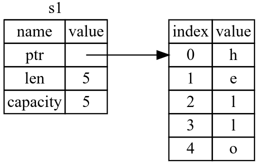
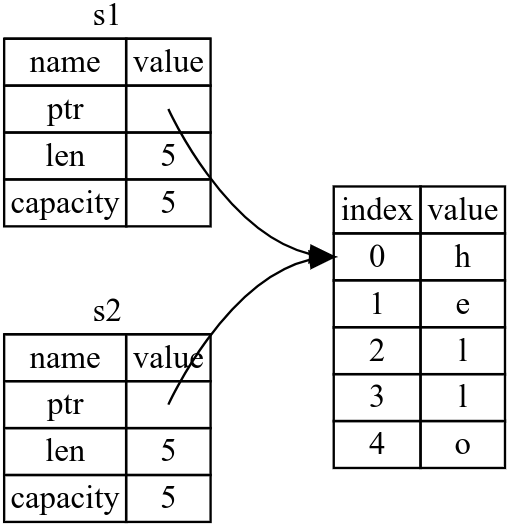
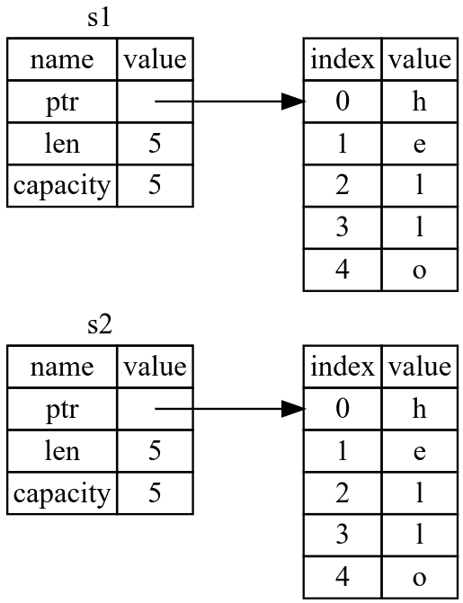
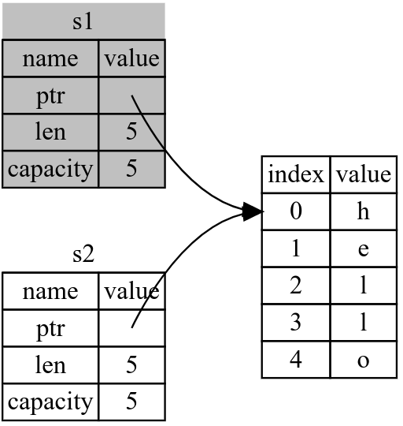
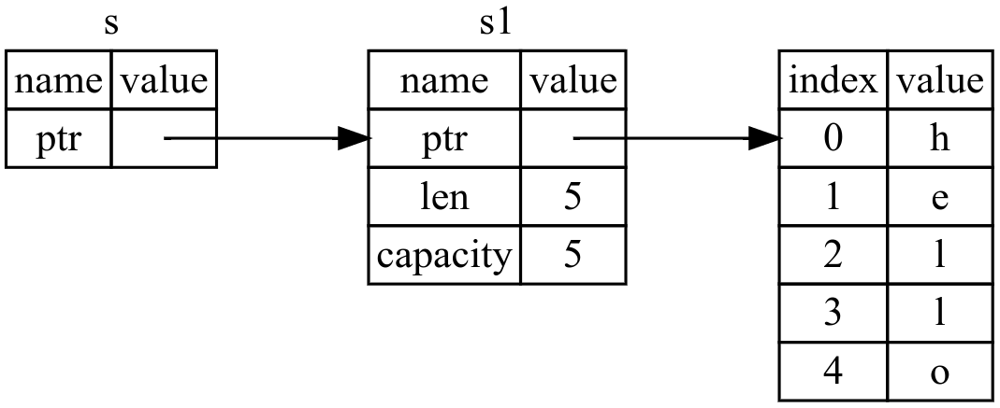
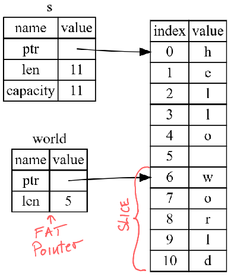

Програмски језик Раст
Базирано на верзији 1.65.0. У изради.
Проф. др Игор Дејановић (igord at uns ac rs)
Креирано 2023-11-20 Mon 11:01, притисни ESC за мапу, "м" за мени, Ctrl+Shift+F за претрагу
1. Увод
- Језик опште намене, компајлиран и статички типизиран са инференцом типова
- Системско програмирање али са особинама вишег нивоа апстракције као што су функционално програмирање
- 2010, Graydon Hoare, Mozilla Research
- Перформансе и сигурност
- Не користи garbage collector али обезбеђује меморијску сигурност кроз borrow checker
- Синтаксно сличан C++. Утицај и OCaml-а, Haskell-а и Erlang-а.
- Користи се у великим фирмама: Amazon, Facebook, Google, Microsoft…
- Више година за редом на SO упитнику први у категорији "most loved programming languages"
2. Инсталација и подешавање
2.1. Инсталација
- Раст стиже са алатом за управљање ланцем алата (енг. toolchain) –
rustup
$ curl --proto '=https' --tlsv1.2 https://sh.rustup.rs -sSf | sh
- Провера инсталације:
~> rustc --version
rustc 1.65.0 (897e37553 2022-11-02)
2.2. Преглед инсталације
~> rustup show
Default host: x86_64-unknown-linux-gnu
rustup home: /home/igor/.rustup
installed toolchains
--------------------
stable-x86_64-unknown-linux-gnu (default)
nightly-x86_64-unknown-linux-gnu
active toolchain
----------------
stable-x86_64-unknown-linux-gnu (default)
rustc 1.58.1 (db9d1b20b 2022-01-20)
2.3. Ажурирање
За ажурирање инсталације на најновију верзију:
rustup update
2.4. Документација
Раст стиже са веома добром документацијом и књигама које су доступне директно из инсталације:
rustup doc
3. Почетак
3.1. Hello, World!
$ mkdir hello_world
$ cd hello_world
File main.rs:
fn main() {
println!("Hello, world!");
}
3.2. Компајлирање и покретање
$ rustc main.rs
$ ./main
Hello, world!
3.3. Hello, Cargo!
- Алат за разрешавање зависности и управљање пројектом.
~> cargo --version
cargo 1.65.0 (4bc8f24d3 2022-10-20)
- Креирање пројекта са
cargoалатом:
$ cargo new hello_cargo
$ cd hello_cargo
3.4. Садржај креираног пројекта
Фајл cargo.toml чува конфигурацију пројекта. Формат је TOML (Tom’s Obvious,
Minimal Language):
[package]
name = "hello_cargo"
version = "0.1.0"
edition = "2021"
[dependencies]
Fajl src/main.rs:
fn main() {
println!("Hello, world!");
}
3.5. Покретање
$ cargo build
Compiling hello_cargo v0.1.0 (file:///projects/hello_cargo)
Finished dev [unoptimized + debuginfo] target(s) in 2.85 secs
Извршни фајл се може наћи на локацији target/debug/hello_cargo:
$ ./target/debug/hello_cargo
Hello, world!
Али cargo омогућава и једноставнији начин покретања:
$ cargo run
Finished dev [unoptimized + debuginfo] target(s) in 0.0 secs
Running `target/debug/hello_cargo`
Hello, world!
3.6. Провера
Такође је могуће брзо проверити да ли се код компајлира:
$ cargo check
Checking hello_cargo v0.1.0 (file:///projects/hello_cargo)
Finished dev [unoptimized + debuginfo] target(s) in 0.32 secs
3.7. Изградња финалне верзије
- У току развоја користимо изградњу за дебаговање која се брже заврши али генерисани извршни код није оптималан.
За финалну верзију је потребно изградњу обавити на следећи начин:
cargo build --release- Ово ће обавити додатне оптимизације које ће дуже трајати али ће крајњи код бити оптимизован.
3.8. cargo као конвенција
Практично сви Раст пројекти користе cargo тако да је унификован начин изградње
пројеката. Углавном се своди на:
$ git clone example.org/someproject
$ cd someproject
$ cargo build
4. Игра погађања бројева
4.1. Подешавање пројекта
$ cargo new guessing_game
$ cd guessing_game
Фајл Cargo.toml:
[package]
name = "guessing_game"
version = "0.1.0"
edition = "2021"
[dependencies]
Фајл src/main.rs:
fn main() {
println!("Hello, world!");
}
$ cargo run
Compiling guessing_game v0.1.0 (file:///projects/guessing_game)
Finished dev [unoptimized + debuginfo] target(s) in 1.50s
Running `target/debug/guessing_game`
Hello, world!
4.2. Преузимање броја са стандардног улаза
use std::io;
fn main() {
println!("Guess the number!");
println!("Please input your guess.");
let mut guess = String::new();
io::stdin()
.read_line(&mut guess)
.expect("Failed to read line");
println!("You guessed: {}", guess);
}
4.3. Променљивост (mutability)
- Варијабле су подразумевано непромењиве (immutable).
Уколико желимо варијаблу чија вредност може да се мења користимо кључну реч
mut.let apples = 5; // immutable let mut bananas = 5; // mutableИсто важи и за параметре и аргументе функција:
io::stdin() .read_line(&mut guess)
4.4. Обрада могућих грешака употребом Result типа
read_line може да заврши неуспешно. Зато враћа io::Result тип који представља
тип енумерације (enum) и има две могуће вредности: Ok и Err.
io::stdin()
.read_line(&mut guess)
.expect("Failed to read line");
expect je имплементиран тако да ће у случају Ok варијанте вратити вредност која
је садржана унутар варијанте док ће у случају Err варијанте прекинути извршавање
програма.
pub fn expect(self, msg: &str) -> T
where
E: fmt::Debug,
{
match self {
Ok(t) => t,
Err(e) => unwrap_failed(msg, &e),
}
}
4.5. Покретање
$ cargo run
Compiling guessing_game v0.1.0 (file:///projects/guessing_game)
Finished dev [unoptimized + debuginfo] target(s) in 6.44s
Running `target/debug/guessing_game`
Guess the number!
Please input your guess.
6
You guessed: 6
4.6. Генерисање случајног броја
Користимо rand пакет (сандук - crate у терминологији Cargo-a).
Секција [dependencies] у фајлу Cargo.toml:
[dependencies]
rand = "0.8.3"
$ cargo build
Updating crates.io index
Downloaded rand v0.8.3
Downloaded libc v0.2.86
...
Compiling rand_chacha v0.3.0
Compiling rand v0.8.3
Compiling guessing_game v0.1.0 (file:///projects/guessing_game)
Finished dev [unoptimized + debuginfo] target(s) in 2.53s
Cargo користи Semantic Versioning. Раст пакети се преузимају са сајта crates.io и кеширају локално.
4.7. Поновљивост изградње - Cargo.lock
- Свако следеће покретање изградње користи исте верзије.
- Први пут када се покрене
cargo buildкреира се фајлCargo.lockса информацијама о верзијама свих сандука који су инсталирани. Cargo.lockје потребно чувати у систему контроле верзија (нпр.git) да би се осигурала поновљивост.
4.8. Ажурирање сандука
Ажурирање на нове верзије сандука се обавља са:
$ cargo update Updating crates.io index Updating rand v0.8.3 -> v0.8.4- Поштује се семантичко верзионирање тј. аутоматски се ажурира на следећу верзију која је мања од наредне главне (major) верзије.
- Ако прелазимо на нову главну верзију то морамо урадити изменом верзије у
Cargo.tomlфајлу.
4.9. Генерисање случајног броја
Фајл src/main.rs:
use std::io;
use rand::Rng;
fn main() {
println!("Guess the number!");
let secret_number = rand::thread_rng().gen_range(1..101);
println!("The secret number is: {}", secret_number);
println!("Please input your guess.");
let mut guess = String::new();
io::stdin()
.read_line(&mut guess)
.expect("Failed to read line");
println!("You guessed: {}", guess);
}
У gen_range користимо израз опсега (range expression). Интервал је затворен на
доњој граници и отворен на горњој. За интервал затворен и од горе можемо
писати 1..=100.
4.10. Документација за локалне сандуке
Да би знали које методе и функције су нам доступне можемо користити уграђену документацију за сандуке пројекта. Документацију добијамо са:
cargo doc --open
4.11. Покретање програма
$ cargo run
Compiling guessing_game v0.1.0 (file:///projects/guessing_game)
Finished dev [unoptimized + debuginfo] target(s) in 2.53s
Running `target/debug/guessing_game`
Guess the number!
The secret number is: 7
Please input your guess.
4
You guessed: 4
4.12. Поређење тајног броја са задатим
Фајл src/main.rs
use rand::Rng;
use std::cmp::Ordering;
use std::io;
fn main() {
// --snip--
println!("You guessed: {}", guess);
match guess.cmp(&secret_number) {
Ordering::Less => println!("Too small!"),
Ordering::Greater => println!("Too big!"),
Ordering::Equal => println!("You win!"),
}
}
- Користимо
std::cmp::Orderingенумерисани тип који има варијантеLess,GreaterиEqual matchизраз пореди задату вредност са вредностима задатим у телу и извршава грану која се подудара. Гранеmatchизраза се у Раст терминологији зову "руке" (arms).
4.13. Поправка типова
Код са претходног слајда није исправан:
$ cargo build
Compiling libc v0.2.86
...
Compiling guessing_game v0.1.0 (file:///projects/guessing_game)
error[E0308]: mismatched types
--> src/main.rs:22:21
|
22 | match guess.cmp(&secret_number) {
| ^^^^^^^^^^^^^^ expected struct `String`, found integer
|
= note: expected reference `&String`
found reference `&{integer}`
error[E0283]: type annotations needed for `{integer}`
--> src/main.rs:8:44
|
8 | let secret_number = rand::thread_rng().gen_range(1..101);
| ------------- ^^^^^^^^^ cannot infer type for type `{integer}`
| |
| consider giving `secret_number` a type
|
= note: multiple `impl`s satisfying `{integer}: SampleUniform` found in the `rand` crate:
- impl SampleUniform for i128;
- impl SampleUniform for i16;
- impl SampleUniform for i32;
- impl SampleUniform for i64;
and 8 more
...
Основа грешке је неслагање типова. Са улаза прихватамо String док нам је тајни
број integer.
4.14. Конверзија стринга у број
Проблем решавамо конверзијом стринга са улаза у бројни тип.
// --snip--
let mut guess = String::new();
io::stdin()
.read_line(&mut guess)
.expect("Failed to read line");
let guess: u32 = guess.trim().parse().expect("Please type a number!");
println!("You guessed: {}", guess);
match guess.cmp(&secret_number) {
Ordering::Less => println!("Too small!"),
Ordering::Greater => println!("Too big!"),
Ordering::Equal => println!("You win!"),
}
Сада се програм компајлира.
$ cargo run
Compiling guessing_game v0.1.0 (file:///projects/guessing_game)
Finished dev [unoptimized + debuginfo] target(s) in 0.43s
Running `target/debug/guessing_game`
Guess the number!
The secret number is: 58
Please input your guess.
76
You guessed: 76
Too big!
4.15. Омогућавање вишеструког погађања - употреба петље
Фајл src/main.rs:
// --snip--
println!("The secret number is: {}", secret_number);
loop {
println!("Please input your guess.");
// --snip--
match guess.cmp(&secret_number) {
Ordering::Less => println!("Too small!"),
Ordering::Greater => println!("Too big!"),
Ordering::Equal => println!("You win!"),
}
}
}
4.16. Прекид рада
Проблем је како прекинути програм када корисник погоди број?
// --snip--
match guess.cmp(&secret_number) {
Ordering::Less => println!("Too small!"),
Ordering::Greater => println!("Too big!"),
Ordering::Equal => {
println!("You win!");
break;
}
}
}
}
4.17. Руковање неисправним улазом
// --snip--
io::stdin()
.read_line(&mut guess)
.expect("Failed to read line");
let guess: u32 = match guess.trim().parse() {
Ok(num) => num,
Err(_) => continue,
};
println!("You guessed: {}", guess);
// --snip--
Потребно је још обрисати линију која приказује генерисани број.
4.18. Финални код
use rand::Rng;
use std::cmp::Ordering;
use std::io;
fn main() {
println!("Guess the number!");
let secret_number = rand::thread_rng().gen_range(1..101);
loop {
println!("Please input your guess.");
let mut guess = String::new();
io::stdin()
.read_line(&mut guess)
.expect("Failed to read line");
let guess: u32 = match guess.trim().parse() {
Ok(num) => num,
Err(_) => continue,
};
println!("You guessed: {}", guess);
match guess.cmp(&secret_number) {
Ordering::Less => println!("Too small!"),
Ordering::Greater => println!("Too big!"),
Ordering::Equal => {
println!("You win!");
break;
}
}
}
}
5. Основни програмски концепти
5.1. Варијабле и променљивост (mutability)
5.1.1. Варијабле и променљивост (mutability)
- Варијабле су подразумевано непромењиве.
Једном када добију вредност (binding) та вредност се не може променити
fn main() { let x = 5; println!("The value of x is: {}", x); x = 6; // greška println!("The value of x is: {}", x); }
$ cargo run
Compiling variables v0.1.0 (file:///projects/variables)
error[E0384]: cannot assign twice to immutable variable `x`
--> src/main.rs:4:5
|
2 | let x = 5;
| -
| |
| first assignment to `x`
| help: consider making this binding mutable: `mut x`
3 | println!("The value of x is: {}", x);
4 | x = 6;
| ^^^^^ cannot assign twice to immutable variable
For more information about this error, try `rustc --explain E0384`.
error: could not compile `variables` due to previous error
5.1.2. mut кључна реч
fn main() {
let mut x = 5;
println!("The value of x is: {}", x);
x = 6;
println!("The value of x is: {}", x);
}
5.2. Константе - const
- Слично као непромењиве варијабле са следећим разликама:
- Увек су непромењиве
- Могу се иницијализовати само константним изразом (познатим у време компајлирања)
- Валидне за целокупно време извршавања програма у опсегу важења где су дефинисане (scope)
- Мора се експлицитно дефинисати тип
- Компајлер ће константе "убацити" на месту употребе
По конвенцији имена константи се пишу великим словима
const THREE_HOURS_IN_SECONDS: u32 = 60 * 60 * 3;
5.3. Типови података
5.3.1. Типови података
- Свака вредност у Расту има тип. Типови морају бити познати у време компајлирања (статички типизиран језик).
Компајлер ће пробати да одреди типове (type inference). Ако није могуће захтева се да дефинишемо тип експлицитно.
Нпр:
let guess: u32 = "42".parse().expect("Not a number!");Овде није могуће одредити тип јер
str::parseфункција може вратити различите бројне типове (функција је генеричка) а не постоји начин да се тип аутоматски одреди.Сигнатура је:
pub fn parse<F>(&self) -> Result<F, <F as FromStr>::Err> where F: FromStr
5.3.2. Integer типови
| Дужина | Signed | Unsigned |
|---|---|---|
| 8-bit | i8 | u8 |
| 16-bit | i16 | u16 |
| 32-bit | i32 | u32 |
| 64-bit | i64 | u64 |
| 128-bit | i128 | u128 |
| arch | isize | usize |
5.3.3. Литерали бројева
| Литерали | Примери |
|---|---|
| Decimal | 98_222 |
| Hex | 0xff |
| Octal | 0o77 |
| Binary | 0b1111_0000 |
| Byte (u8 only) | b'A' |
5.3.4. Floating-Point типови
fn main() {
let x = 2.0; // f64
let y: f32 = 3.0; // f32
}
IEEE-754 стандард
5.3.5. Операције над бројевима
fn main() {
// addition
let sum = 5 + 10;
// subtraction
let difference = 95.5 - 4.3;
// multiplication
let product = 4 * 30;
// division
let quotient = 56.7 / 32.2;
let floored = 2 / 3; // Results in 0
// remainder
let remainder = 43 % 5;
}
5.3.6. Boolean тип
fn main() {
let t = true;
let f: bool = false; // with explicit type annotation
}
5.3.7. Тип карактера
fn main() {
let c = 'z';
let z = 'ℤ';
let heart_eyed_cat = '😻';
}
5.3.8. Торке (tuples)
- Хетерогене структуре фиксне дужине.
fn main() {
let tup: (i32, f64, u8) = (500, 6.4, 1);
}
- Распакивање торки (destructuring):
fn main() {
let tup = (500, 6.4, 1);
let (x, y, z) = tup;
println!("The value of y is: {}", y);
}
Приступ елементима торке:
fn main() {
let mut x: (i32, f64, u8) = (500, 6.4, 1);
let five_hundred = x.0;
let six_point_four = x.1;
let one = x.2;
// Уколико је торка промењива можемо извршити доделу
x.2 = 2;
println!("{x:?}")
}
(500, 6.4, 2)
5.3.9. Низовни тип
- Сваки елемент низовног типа мора имати исти тип
Димензија низа је непромењива (алоциран је на стеку)
fn main() { let a = [1, 2, 3, 4, 5]; }Тип се може експлицитно дефинисати на следећи начин (низ дужине
5типаi32):let a: [i32; 5] = [1, 2, 3, 4, 5];Иницијализација свих елемената на исту вредност се обавља на следећи начин:
let a = [3; 5];Где је вредност сваког елемента
3а дужина низа5.
Индексни приступ:
fn main() {
let a = [1, 2, 3, 4, 5];
let first = a[0];
let second = a[1];
}
Конверзија низа у хомогену торку:
fn main() {
let a = [1, 2, 3];
let tup: (u32, u32, u32) = a.into();
println!("{tup:?}")
}
(1, 2, 3)
5.4. Функције
5.4.1. Функције
fn main() {
println!("Hello, world!");
another_function();
}
fn another_function() {
println!("Another function.");
}
- За именовање функција као и варијабли користи се snake_case.
5.4.2. Funkcije - parametri
fn main() {
print_labeled_measurement(5, 'h');
}
fn print_labeled_measurement(value: i32, unit_label: char) {
println!("The measurement is: {}{}", value, unit_label);
}
5.4.3. Искази и изрази
- Рaст је језик базиран на изразима (expression-based)
- Искази (statements) су језичке конструкције које немају повратну вредност. Изрази (expressions) се евалуирају у одређени резултат, тј. имају вредност.
Пример:
letје исказ тј. нема повратну вредност. Ово можете писати:let y = 6;Ali ovo ne:
let x = (let y = 6);
Блок кода је такође израз. Шта је вредност у коју се евалуира?
{
let x = 3;
x + 1
}
Вредност блока је вредност последњег израза, тј. x+1. Приметите да ту не
користимо ; јер терминација овим карактером претвара израз у исказ.
Због овога је сасвим легално да пишемо:
fn main() {
let y = {
let x = 3;
x + 1
};
println!("The value of y is: {}", y);
}
The value of y is: 4
5.4.4. Повратне вредности функција
Вредност функције је вредност блока који представља тело функције, дакле последњег израза унутар тела функције.
fn five() -> i32 {
5
}
fn main() {
let x = five();
println!("The value of x is: {}", x);
}
The value of x is: 5
Или на пример:
fn main() {
let x = plus_one(5);
println!("The value of x is: {}", x);
}
fn plus_one(x: i32) -> i32 {
x + 1
}
The value of x is: 6
Уколико израз x+1 терминирамо са ; код се неће компајлирати јер функција
декларише да враћа тип i32 док сада враћа () (тзв. unit type) односно нема
повратну вредност јер је последња инструкција исказ.
fn main() {
let x = plus_one(5);
println!("The value of x is: {}", x);
}
fn plus_one(x: i32) -> i32 {
x + 1;
}
error[E0308]: mismatched types
--> src/main.rs:8:24
|
8 | fn plus_one(x: i32) -> i32 {
| -------- ^^^ expected `i32`, found `()`
| |
| implicitly returns `()` as its body has no tail or `return` expression
9 | x + 1;
| - help: consider removing this semicolon
For more information about this error, try `rustc --explain E0308`.
error: could not compile `cargo4UyKF0` due to previous error
5.5. Коментари
Коментари се пишу после // или у форми блок коментара /*.... */ као и у C++-у.
Ово би били валидни коментари:
// So we’re doing something complicated here, long enough that we need
// multiple lines of comments to do it! Whew! Hopefully, this comment will
// explain what’s going on.
fn main() {
let lucky_number = 7; // I’m feeling lucky today
}
...
fn main() {
// I’m feeling lucky today
let lucky_number = 7;
/* this is block comment
which can span multiple lines.
Nesting is allowed.
*/
}
Постоје и коментари за документацију који представљају посебну синтаксу за
коментаре који су део API документације. Они се пишу после ///. На пример:
/// Adds one to the number given.
///
/// # Examples
///
/// ```
/// let arg = 5;
/// let answer = my_crate::add_one(arg);
///
/// assert_eq!(6, answer);
/// ```
pub fn add_one(x: i32) -> i32 {
x + 1
}
5.6. Контрола тока
5.6.1. if изрази
fn main() {
let number = 3;
if number < 5 {
println!("condition was true");
} else {
println!("condition was false");
}
}
5.6.2. if-else
fn main() {
let number = 6;
if number % 4 == 0 {
println!("number is divisible by 4");
} else if number % 3 == 0 {
println!("number is divisible by 3");
} else if number % 2 == 0 {
println!("number is divisible by 2");
} else {
println!("number is not divisible by 4, 3, or 2");
}
}
5.6.3. if у let исказима
if је израз па се може користити где год можемо писати и било који други израз.
fn main() {
let condition = true;
let number = if condition { 5 } else { 6 };
println!("The value of number is: {}", number);
}
The value of number is: 5
Али се гране морају слагати по типу. Ово је погрешно јер је прва грана типа
i32 док је else грана типа str.
fn main() {
let condition = true;
let number = if condition { 5 } else { "six" };
println!("The value of number is: {}", number);
}
5.6.4. Петље
Рaст има три типа петље:
loop- за бесконачне петљеwhile- условна петљаfor- петља за итерацију кроз елементе итерабилних типова
5.6.5. loop
fn main() {
loop {
println!("again!");
}
}
5.6.6. loop лабеле
Уколико имамо угњеждене loop исказе можемо користити лабеле приликом изласка са
break инструкцијом.
fn main() {
let mut count = 0;
'counting_up: loop {
println!("count = {}", count);
let mut remaining = 10;
loop {
println!("remaining = {}", remaining);
if remaining == 9 {
break;
}
if count == 2 {
break 'counting_up;
}
remaining -= 1;
}
count += 1;
}
println!("End count = {}", count);
}
5.6.7. loop као израз
loop може имати повратну вредност. Повратна вредност се дефинише као параметар
break инструкције.
fn main() {
let mut counter = 0;
let result = loop {
counter += 1;
if counter == 10 {
break counter * 2;
}
};
println!("The result is {}", result);
}
5.6.8. while
fn main() {
let mut number = 3;
while number != 0 {
println!("{}!", number);
number -= 1;
}
println!("LIFTOFF!!!");
}
5.6.9. for
Итерацију кроз уређену колекцију, као што је низ, можемо обавити са while петљом.
fn main() {
let a = [10, 20, 30, 40, 50];
let mut index = 0;
while index < 5 {
println!("the value is: {}", a[index]);
index += 1;
}
}
Али је за ту намену природније и сигурније користити for петљу. Такође ће се
програм брже извршавати.
fn main() {
let a = [10, 20, 30, 40, 50];
for element in a {
println!("the value is: {}", element);
}
}
for петље су најчешћи облик петљи у употреби у Расту. Користе се нпр. и у
ситуацији када је потребно извршити петљу одређени број пута.
fn main() {
for number in (1..4).rev() {
println!("{}!", number);
}
println!("LIFTOFF!!!");
}
3! 2! 1! LIFTOFF!!!
5.6.10. for и итератори
Приликом итерације употребом for исказа имплицитно се позива метода
into_iter() над колекцијом. Ова метода конзумира елементе колекције.
fn main() {
let names = vec!["Bob", "Frank", "Ferris"];
for name in names.into_iter() {
match name {
"Ferris" => println!("There is a rustacean among us!"),
_ => println!("Hello {}", name),
}
}
// println!("names: {:?}", names); -- FIXME: колекција овде није доступна
}
fn main() {
let names = vec!["Bob", "Frank", "Ferris"];
for name in names.iter() {
match name {
&"Ferris" => println!("There is a rustacean among us!"),
// TODO ^ Try deleting the & and matching just "Ferris"
_ => println!("Hello {}", name),
}
}
println!("names: {:?}", names);
}
Hello Bob Hello Frank There is a rustacean among us! names: ["Bob", "Frank", "Ferris"]
fn main() {
let mut names = vec!["Bob", "Frank", "Ferris"];
for name in names.iter_mut() {
*name = match name {
&mut "Ferris" => "There is a rustacean among us!",
_ => "Hello",
}
}
println!("names: {:?}", names);
}
names: ["Hello", "Hello", "There is a rustacean among us!"]
6. Власништво и позајмљивање (Ownership and borrowing)
6.1. Власништво
6.1.1. Власништво
- Један од најважнијих концепата језика.
- Скуп правила који омогућавају управљање меморијом.
- Гаранције за меморијску сигурност без употребе garbage collector-а
- Све провере се обављају у време компајлирања - резултује одличним перформансама у време извршавања.
6.1.2. Стек и хип (Stack and Heap)
- Стек - алокација простора за податке чија је величина позната у време
компајлирања.
- Бржа алокација и деалокација - једноставан механизам, LIFO структура.
- Бржи приступ - локалне варијабле, кеширање приступа.
- Хип - слободна алокација у време извршавања.
- Спорија алокација и деалокација.
- Спорији приступ - произвољна локација.
6.1.3. Правила власништва
- Свака вредност у Расту има варијаблу која се назива власником (owner).
- У сваком тренутку постоји само један власник.
- Када власник изађе из опсега важења (scope) вредност се деалоцира (drop).
6.1.4. Опсег важења варијабле (Variable Scope)
{ // s није валидно овде јер још није декларисано
let s = "hello"; // s је валидно од ове позиције
// користимо s
} // овде опсег престаје да важи и s више није валидно
6.1.5. String тип
Демонстрација власништва над типом који се алоцира на хипу.
let mut s = String::from("hello"); s.push_str(", world!"); // push_str() додаје литерал на стринг println!("{}", s); // hello, world!`- Меморија се алоцира са хипа у време извршавања.
- Морамо вратити меморију алокатору када нам више није потребна.
Алокација стринга се обавља на линији:
let mut s = String::from("hello");- Али деалокација је тежа:
- Garbage collector
- Memory waste
- Double-free
- Раст компајлер ће додати кôд који ради деалокацију када власник напусти опсег важења.
Позива се функција
dropнад типом и ова функција је задужена да обави деалокацију.{ let s = String::from("hello"); // s постаје валидно // користимо s } // <- s излази из опсега и позива се "drop"
6.1.6. Додела вредности
Копирање вредности
xуy. Обе варијабле сада имају вредност5.let x = 5; let y = x;Али са
Stringтипом дешава се нешто друго.let s1 = String::from("hello");

Ако би се копирао само садржај са стека имали бисмо следећу ситуацију (тзв. shallow copy).
let s1 = String::from("hello"); let s2 = s1;

Што је проблематично јер када и s1 и s2 напусте опсег покушаће се двострука
деалокација исте меморије на хипу (double free).
Ако би се и хип меморија копирала (tzv. deep copy) имали бисмо валидну ситуацију али би таква операција била веома "скупа".

6.1.7. Премештање (Move)
Ако пробамо да компајлирамо следећи код:
let s1 = String::from("hello");
let s2 = s1;
println!("{}, world!", s1);
Добићемо грешку:
$ cargo run
Compiling ownership v0.1.0 (file:///projects/ownership)
error[E0382]: borrow of moved value: `s1`
--> src/main.rs:5:28
|
2 | let s1 = String::from("hello");
| -- move occurs because `s1` has type `String`, which does not implement the `Copy` trait
3 | let s2 = s1;
| -- value moved here
4 |
5 | println!("{}, world!", s1);
| ^^ value borrowed here after move
For more information about this error, try `rustc --explain E0382`.
error: could not compile `ownership` due to previous error
Оно што нам компајлер каже је да се у исказу:
let s2 = s1;
променио власник овог стринга. Нови власник је сада s2 док је варијабла s1
постала невалидна и није је више могуће користити.
Кажемо да се обавило "премештање" (move) вредности из s1 у s2.

Чиме се испуњава прво правило власништва и спречава double free грешка.
6.1.8. Клонирање
Последица претходног је да Раст никада неће аутоматски обавити дубоко копирање варијабле јер би то могло да изазове лоше перформансе.
Дубоко копирање (стек+хип) радимо са clone методом:
let s1 = String::from("hello");
let s2 = s1.clone();
println!("s1 = {}, s2 = {}", s1, s2);
Сада је лако пронаћи у коду сва места где се обавља потенцијално "скупа" операција дубоког копирања.
6.1.9. Copy типови
Како онда ради пример који смо видели претходно? Зашто не долази до премештања
и инвалидације y варијабле?
let x = 5;
let y = x;
println!("x = {}, y = {}", x, y);
- Код простих типова чија је величина позната у време компајлирања и који могу у целости стати на стек нема разлике између дубоког и плитког копирања.
- Овакви типови имплементирају Copy особину (Trait). Вредности ових типова не обављају премештање већ увек копирање.
- Импликација је да се варијабла са десне стране доделе може користити и након доделе.
- Раст ће спречити имплементацију Copy особине ако тип имплементира и Drop јер то значи да ради неку специјалну алокацију па му је потребна и посебна деалокација што значи да мора да се ради премештање.
6.1.10. Власништво и функције
- Семантика преноса параметара код позива функција је слична семантици доделе.
fn main() {
let s = String::from("hello"); // s постаје валидно
takes_ownership(s); // s вредност се премешта у функцију...
// ... тако да s није валидно од ове позиције
let x = 5; // x постаје валидно
makes_copy(x); // x би се преместило у функцију,
// али i32 је Copy, тако да је ok
// да се x користи и после
} // x излази из опсега, затим s. Али пошто је s премештено ништа посебно се
// не дешава.
fn takes_ownership(some_string: String) { // some_string улази у опсег
println!("{}", some_string);
} // some_string излази из опсега и позива се `drop`. Меморија са хипа се
// ослобађа.
fn makes_copy(some_integer: i32) { // some_integer улази у опсег
println!("{}", some_integer);
} // some_integer излази из опсега. Пошто није 'Drop', ништа посебно се не
// догађа (осим "скидања" са стека наравно)
6.1.11. Повратне вредности и опсези
Приликом враћања вредности из функције такође може доћи до премештања власништва.
fn main() {
let s1 = gives_ownership(); // gives_ownership премешта повратну
// вредност у s1
let s2 = String::from("hello"); // s2 постаје валидно
let s3 = takes_and_gives_back(s2); // s2 се премешта у функцију
// takes_and_gives_back, која премешта
// повратну вредност у s3
} // s3 излази из опсега и позива се `drop`. s2 је премештена па се ништа
// не дешава. s1 такође излази из опсега и деалоцира се.
fn gives_ownership() -> String { // gives_ownership ће преместити
// своју повратну вредност у функцију
// која је позива
let some_string = String::from("yours"); // some_string постаје валидно
some_string // some_string се премешта
// у функцију позиваоца
}
// Ова функција узима власништво над стрингом и враћа га назад
fn takes_and_gives_back(a_string: String) -> String { // a_string постаје валидно
a_string // a_string се премешта у функцију позиваоца
}
- Често нам је потребно да варијаблу користимо и после слања у функцију.
- Могли би је стало враћати заједно са резултатом функције на пример употребом торки.
fn main() {
let s1 = String::from("hello");
let (s2, len) = calculate_length(s1);
println!("The length of '{}' is {}.", s2, len);
}
fn calculate_length(s: String) -> (String, usize) {
let length = s.len();
(s, length)
}
Али је то напорно. Постоји концепт у Раст који је намењен оваквим ситуацијама и базиран је на референцама и позајмљивању вредности.
6.2. Референце и позајмљивање (References and Borrowing)
6.2.1. Референце и позајмљивање (References and Borrowing)
- Референца је попут поинтера, садржи адресу вредности коју поседује нека друга варијабла.
- За разлику од поинтера, референце у Расту су гарантовано валидне.
fn main() {
let s1 = String::from("hello");
let len = calculate_length(&s1);
println!("The length of '{}' is {}.", s1, len);
}
fn calculate_length(s: &String) -> usize {
s.len()
}

6.2.2. Референцирање
Примена оператора
&над варијаблом називамо референцирање.let s1 = String::from("hello"); let len = calculate_length(&s1);- Синтакса
&s1нам омогућава да креирамо референцу на вредност чији власник јеs1без узимања власништва. - Пошто референца није власник не долази до деалокације приликом изласка из опсега.
- Операција обрнута референцирању назива се дереференцирање и врши се
*оператором над референцом (нпр.*s2је вредност на коју референцираs2). - Операцију референцирања називамо позајмљивањем (borrowing).
- Параметар функције може бити референца.
fn calculate_length(s: &String) -> usize { // s је референца на String
s.len()
} // s излази из опсега али пошто нема власништво над вредношћу
// ништа се не дешава.
6.2.3. Промена позајмљене вредности
Шта се дешава уколико покушамо да модификујемо позајмљену вредност?
fn main() {
let s = String::from("hello");
change(&s);
}
fn change(some_string: &String) {
some_string.push_str(", world");
}
$ cargo run
Compiling ownership v0.1.0 (file:///projects/ownership)
error[E0596]: cannot borrow `*some_string` as mutable, as it is behind a `&` reference
--> src/main.rs:8:5
|
7 | fn change(some_string: &String) {
| ------- help: consider changing this to be a mutable reference: `&mut String`
8 | some_string.push_str(", world");
| ^^^^^^^^^^^^^^^^^^^^^^^^^^^^^^^ `some_string` is a `&` reference, so the data it refers
to cannot be borrowed as mutable
For more information about this error, try `rustc --explain E0596`.
error: could not compile `ownership` due to previous error
6.2.4. Промењиве референце
Као и варијабле, и референце су подразумевано непромењива (immutable). Морамо бити експлицитни уколико нам треба промењива референца.
fn main() {
let mut s = String::from("hello");
change(&mut s);
}
fn change(some_string: &mut String) {
some_string.push_str(", world");
}
6.2.5. Више промењивих референци над истом вредношћу
Раст не дозвољава да исти податак у једном тренутку има више промењивих референци.
let mut s = String::from("hello");
let r1 = &mut s;
let r2 = &mut s;
println!("{}, {}", r1, r2);
$ cargo run
Compiling ownership v0.1.0 (file:///projects/ownership)
error[E0499]: cannot borrow `s` as mutable more than once at a time
--> src/main.rs:5:14
|
4 | let r1 = &mut s;
| ------ first mutable borrow occurs here
5 | let r2 = &mut s;
| ^^^^^^ second mutable borrow occurs here
6 |
7 | println!("{}, {}", r1, r2);
| -- first borrow later used here
For more information about this error, try `rustc --explain E0499`.
error: could not compile `ownership` due to previous error
Овим ограничењем Раст, у време компајлирања, спречава класу грешака које доводе до недефинисаног понашања и које зовемо data races. Ове грешке се веома тешко откривају и отклањају и могу настати уколико су задовољени следећи услови:
- Два или више поинтера приступају истим подацима у исто време,
- Бар један поинтер се користи за измену податка,
- Не постоји механизам за синхронизацију приступа.
Више промењивих референци можемо имати али не у истом опсегу:
let mut s = String::from("hello");
{
let r1 = &mut s;
} // r1 овде излази из опсега тако да можемо краирати нове референце
let r2 = &mut s;
6.2.6. Комбинација промењивих и непромењивих референци
Слично правило постоји и уколико имамо комбинацију промењивих и непромењивих референци:
let mut s = String::from("hello");
let r1 = &s; // ovo je OK
let r2 = &s; // ovo je OK
let r3 = &mut s; // GREŠKA!
println!("{}, {}, and {}", r1, r2, r3);
$ cargo run
Compiling ownership v0.1.0 (file:///projects/ownership)
error[E0502]: cannot borrow `s` as mutable because it is also borrowed as immutable
--> src/main.rs:6:14
|
4 | let r1 = &s; // no problem
| -- immutable borrow occurs here
5 | let r2 = &s; // no problem
6 | let r3 = &mut s; // BIG PROBLEM
| ^^^^^^ mutable borrow occurs here
7 |
8 | println!("{}, {}, and {}", r1, r2, r3);
| -- immutable borrow later used here
For more information about this error, try `rustc --explain E0502`.
error: could not compile `ownership` due to previous error
- Не можемо истовремено имати непромењиве и промењиве референце јер корисници непромењивих референци не очекују да се подаци мењају.
- Можемо имати више непромењивих референци јер нико не може да мења податке и тиме утиче на друге.
- Промењиве референце често зовемо и јединствене референце јер када су оне активне не може постојати друга референца на исту вредност.
6.2.7. Опсег важења референце
Опсег важења референце почиње од места где је уведена па до њене последње употребе. На пример, ово је валидно:
let mut s = String::from("hello");
let r1 = &s; // OK
let r2 = &s; // OK
println!("{} and {}", r1, r2);
// варијабле r1 и r2 се не користе у наставку па њихов опсег
// престаје да важи.
let r3 = &mut s; // зато је ово OK
println!("{}", r3);
Ова особина референци се назива Non-Lexical Lifetimes (NLL).
6.2.8. "Висеће" референце
- У језицима са поинтерима лако је креирати поинтер на део меморије који је деалоциран.
- Раст гарантовано спречава овакве грешке. Референце су увек валидне у Расту.
fn main() {
let reference_to_nothing = dangle();
}
fn dangle() -> &String {
let s = String::from("hello");
&s
}
$ cargo run
Compiling ownership v0.1.0 (file:///projects/ownership)
error[E0106]: missing lifetime specifier
--> src/main.rs:5:16
|
5 | fn dangle() -> &String {
| ^ expected named lifetime parameter
|
= help: this function's return type contains a borrowed value, but there is no value
for it to be borrowed from
help: consider using the `'static` lifetime
|
5 | fn dangle() -> &'static String {
| ~~~~~~~~
For more information about this error, try `rustc --explain E0106`.
error: could not compile `ownership` due to previous error
- Механизам који ово спречава назива се "време живота" (lifetime) и биће детаљније обрађено у наставку.
У преводу Раст нам поручује:
Тип повратне вредности ове функције је позајмљена вредност, али не постоји улазни параметар од кога може да се позајми.
6.2.9. Шта се тачно десило?
fn dangle() -> &String { // dangle враћа референцу на String
let s = String::from("hello"); // s је нови String
&s // Враћамо референцу на String s
} // s излази из опсега и позива се `drop`. Меморија се ослобађа.
// ОПАСНОСТ! Враћена референца ће бити "висећа".
Како се може решити. Вратићемо поседовану (owned) вредност, тј урадићемо премештање вредности у функцију позиваоца.
fn no_dangle() -> String {
let s = String::from("hello");
s
}
6.2.10. Правила референцирања
- У сваком тренутку можемо имати или једну промењиву или произвољан број непромењивих референци.
- Референце увек морају бити валидне.
6.3. Исечци (Slice тип)
6.3.1. Slice
- Исечци (slices) омогућавају референцирање континуалне секвенце унутар колекције уместо целе колекције
6.3.2. Пример
Функција која за задати стринг враћа прву реч.
fn first_word(s: &String) -> usize {
let bytes = s.as_bytes();
for (i, &item) in bytes.iter().enumerate() {
if item == b' ' {
return i;
}
}
s.len()
}
- Дакле, враћамо индекс краја речи. Позиваоц сада има потребне информације да дође до тражене речи.
- Проблем: два податка која су у вези али морамо ту везу ручно да одржавамо јер немамо гаранцију да ће број који је враћен бити валидан и у будућности (нпр. стринг може да се промени или да изађе из опсега).
fn main() {
let mut s = String::from("hello world");
let word = first_word(&s); // word ће добити вредност 5
s.clear(); // стринг s постаје ""
// word је и даље 5 иако то више није исправно
}
Проблем постаје још озбиљнији ако нпр. напишемо функцију second_word која враћа
другу реч задатог стринга. По аналогији са претходним, требали би да вратимо
почетак и крај друге речи.
fn second_word(s: &String) -> (usize, usize) {
Сада имамо три податка о којима морамо да водимо рачуна.
6.3.3. Стринг исечак
Проблем решавамо употребом исечака.
let s = String::from("hello world");
let hello = &s[0..5];
let world = &s[6..11];
Синтакса s[x..y] креира исечак над секвенцом s. С обзиром да овај тип ([T]) нема
познату величину у време компајлирања, не можемо га алоцирати на стеку, односно
не можемо га доделити локалним варијаблама или прослеђивати као параметар
функције. Зато се у пракси користи референца на исечак (&[T]) (често се зове и
fat pointer).
Дакле, у пракси много чешће срећемо синтаксу &s[x..y].

6.3.4. Исечци и синтакса опсега (range)
let s = String::from("hello");
let slice = &s[0..2];
let slice = &s[..2];
let s = String::from("hello");
let len = s.len();
let slice = &s[3..len];
let slice = &s[3..];
let s = String::from("hello");
let len = s.len();
let slice = &s[0..len];
let slice = &s[..];
6.3.5. Модификација примера да користи стринг исечке
fn first_word(s: &String) -> &str {
let bytes = s.as_bytes();
for (i, &item) in bytes.iter().enumerate() {
if item == b' ' {
return &s[0..i];
}
}
&s[..]
}
Исти API и за second_word.
fn second_word(s: &String) -> &str {
Сада нам компајлер осигурава да увек имамо валидну референцу на реч.
fn main() {
let mut s = String::from("hello world");
let word = first_word(&s);
s.clear(); // ГРЕШКА!
println!("the first word is: {}", word);
}
$ cargo run
Compiling ownership v0.1.0 (file:///projects/ownership)
error[E0502]: cannot borrow `s` as mutable because it is also borrowed as immutable
--> src/main.rs:18:5
|
16 | let word = first_word(&s);
| -- immutable borrow occurs here
17 |
18 | s.clear(); // error!
| ^^^^^^^^^ mutable borrow occurs here
19 |
20 | println!("the first word is: {}", word);
| ---- immutable borrow later used here
For more information about this error, try `rustc --explain E0502`.
error: could not compile `ownership` due to previous error
Не само да је API лакши за употребу већ је читава класа грешака које се тешко откривају елиминисана у време компајлирања.
6.3.6. Стринг литерали су референце на исечке
let s = "Hello, world!";
Тип од s је &str. str је стринг исечак.
6.3.7. Стринг исечци као параметри функција
fn first_word(s: &String) -> &str {
Али ће искусни Раст програмери писати:
fn first_word(s: &str) -> &str {
Јер ће ова функција моћи да се користи и за &str и за &String. Овде се
употребљава тзв. Deref Coercion односно могућности типова да се дереференцирају
у други тип. Нпр. &String ће се аутоматски дереференцирати у &str уколико је то
потребно. Операција је ефикасна.
fn main() {
let my_string = String::from("hello world");
// `first_word` works on slices of `String`s, whether partial or whole
let word = first_word(&my_string[0..6]);
let word = first_word(&my_string[..]);
// `first_word` also works on references to `String`s, which are equivalent
// to whole slices of `String`s
let word = first_word(&my_string);
let my_string_literal = "hello world";
// `first_word` works on slices of string literals, whether partial or whole
let word = first_word(&my_string_literal[0..6]);
let word = first_word(&my_string_literal[..]);
// Because string literals *are* string slices already,
// this works too, without the slice syntax!
let word = first_word(my_string_literal);
}
6.3.8. Употреба исечака над другим структурама
let a = [1, 2, 3, 4, 5];
let slice = &a[1..3]; // референца на исечак типа &[i32]
assert_eq!(slice, &[2, 3]);
7. Структуре
7.1. struct тип
Кориснички тип који омогућава груписање више логички повезаних вредности - поља (fields).
У Расту постоје три врсте структура:
- Структуре торки (tuple structs) - у основи представљају именоване торке
- Класичне Ц-овске структуре
- Јединичне структуре (unit structs) - структуре без атрибута
7.2. Дефиниција структуре
struct User {
active: bool,
username: String,
email: String,
sign_in_count: u64,
}
7.3. Креирање инстанце структуре
fn main() {
let user1 = User {
active: true,
username: String::from("someusername123"),
email: String::from("someone@example.com"),
sign_in_count: 1,
};
}
7.4. Промена вредности поља
fn main() {
let mut user1 = User {
active: true,
username: String::from("someusername123"),
email: String::from("someone@example.com"),
sign_in_count: 1,
};
user1.email = String::from("anotheremail@example.com");
}
7.5. Креирање структуре путем функције
fn build_user(email: String, username: String) -> User {
User {
active: true,
username: username,
email: email,
sign_in_count: 1,
}
}
7.6. Употреба скраћеног облика
fn build_user(email: String, username: String) -> User {
User {
active: true,
username,
email,
sign_in_count: 1,
}
}
7.7. Креирање инстанце из друге инстанце употребом синтаксе за ажурирање (update syntax)
Уместо:
fn main() {
// --snip--
let user2 = User {
active: user1.active,
username: user1.username,
email: String::from("another@example.com"),
sign_in_count: user1.sign_in_count,
};
}
Можемо писати:
fn main() {
let user2 = User {
email: String::from("another@example.com"),
..user1
};
}
user1.usernameје премештен уuser2и не може више да се користи. Остатак структуре може јерuser1.emailније премештен а остала поља су Copy типа.
7.8. Структуре торки
Тзв. именоване торке. Поља немају имена, приступа им се као код обичних торки
употребом x.n синтаксе где је n редни број поља.
struct Color(i32, i32, i32);
struct Point(i32, i32, i32);
fn main() {
let black = Color(0, 0, 0);
let origin = Point(5, 8, 0);
let y = origin.1;
println!("{}", y);
}
8
7.9. Јединичне структуре - без поља
Користе се за креирање типова који имају понашање (имплементирају особине) али не чувају податке (тзв. Zero Sized Types (ZSTs))
struct AlwaysEqual;
fn main() {
let subject = AlwaysEqual;
}
7.10. Разни примери
#[derive(Debug)]
struct Person {
name: String,
age: u8,
}
// A unit struct
struct Unit;
// A tuple struct
struct Pair(i32, f32);
// A struct with two fields
struct Point {
x: f32,
y: f32,
}
// Structs can be reused as fields of another struct
struct Rectangle {
// A rectangle can be specified by where the top left and bottom right
// corners are in space.
top_left: Point,
bottom_right: Point,
}
// Create struct with field init shorthand
let name = String::from("Peter");
let age = 27;
let peter = Person { name, age };
// Print debug struct
println!("{:?}", peter);
// Instantiate a `Point`
let point: Point = Point { x: 10.3, y: 0.4 };
// Access the fields of the point
println!("point coordinates: ({}, {})", point.x, point.y);
// Make a new point by using struct update syntax to use the fields of our
// other one
let bottom_right = Point { x: 5.2, ..point };
// `bottom_right.y` will be the same as `point.y` because we used that field
// from `point`
println!("second point: ({}, {})", bottom_right.x, bottom_right.y);
// Destructure the point using a `let` binding
let Point { x: left_edge, y: top_edge } = point;
let _rectangle = Rectangle {
// struct instantiation is an expression too
top_left: Point { x: left_edge, y: top_edge },
bottom_right: bottom_right,
};
// Instantiate a unit struct
let _unit = Unit;
// Instantiate a tuple struct
let pair = Pair(1, 0.1);
// Access the fields of a tuple struct
println!("pair contains {:?} and {:?}", pair.0, pair.1);
// Destructure a tuple struct
let Pair(integer, decimal) = pair;
println!("pair contains {:?} and {:?}", integer, decimal);
8. Енумерације
8.1. Enum тип
8.1.1. Enum тип
- Дефинисање типа навођењем свих могућих варијанти
- Варијанта може да садржи додатне податке
- Слично са алгебарским типовима података (algebraic data types) у функционалним језицима, нпр. F#, OCaml и Haskell-у. Ова врста алгебарског типа је позната и под називом sum type.
8.1.2. Пример - IP адреса
- IP адреса представља идентификацију мрежних интерфејса у уређајима који комуницирају посредством Интернет протокола (Internet Protocol - IP).
- Тренутно имамо у употреби стару верзију 4 и нову верзију 6 која ће временом заменити верзију 4.
- Верзија 4 је дужине 32 бита и наводи се као четири октета у облику нпр.
192.0.2.1 - Верзија 6 је дужине 128 бита и наводи се као 8 група од по 4 хекса цифре
раздвојене са
:, нпр.2001:db8:0:1234:0:567:8:1
У Расту можемо писати следеће:
enum IpAddrKind {
V4,
V6,
}
Док вредности можемо креирати са:
let four = IpAddrKind::V4;
let six = IpAddrKind::V6;
8.1.3. Пример - IP адреса - функција
Сада можемо писати функцију која прима овај тип чиме је могуће проследити било коју варијанту као аргумент.
fn route(ip_kind: IpAddrKind) {}
...
route(IpAddrKind::V4);
route(IpAddrKind::V6);
8.1.4. Пример - IP адреса - вредност
- Али како да дефинишемо конкретну вредност IP адресе?
- Прва идеја би могла бити да користимо структуру.
enum IpAddrKind {
V4,
V6,
}
struct IpAddr {
kind: IpAddrKind,
address: String,
}
let home = IpAddr {
kind: IpAddrKind::V4,
address: String::from("127.0.0.1"),
};
let loopback = IpAddr {
kind: IpAddrKind::V6,
address: String::from("::1"),
};
Али, са enum типом можемо то урадити и боље. Enum варијанте могу садржати
додатне податке.
enum IpAddr {
V4(String),
V6(String),
}
let home = IpAddr::V4(String::from("127.0.0.1"));
let loopback = IpAddr::V6(String::from("::1"));
Вредност садржана у варијанти не мора бити иста за све варијанте. На пример, IPv4 се састоји од 4 октета и можда желимо да вредност наводимо и чувамо у том облику.
enum IpAddr {
V4(u8, u8, u8, u8),
V6(String),
}
let home = IpAddr::V4(127, 0, 0, 1);
let loopback = IpAddr::V6(String::from("::1"));
8.1.5. Пример - IP адреса - std библиотека
У стандардној библиотеци можемо пронаћи тип IpAddr. Дефинисан је на следећи
начин.
struct Ipv4Addr {
// --snip--
}
struct Ipv6Addr {
// --snip--
}
enum IpAddr {
V4(Ipv4Addr),
V6(Ipv6Addr),
}
8.1.6. Пример - Message
enum Message {
Quit,
Move { x: i32, y: i32 },
Write(String),
ChangeColor(i32, i32, i32),
}
Следеће структуре садрже исте податке као претходни enum тип.
struct QuitMessage; // unit struct
struct MoveMessage {
x: i32,
y: i32,
}
struct WriteMessage(String); // tuple struct
struct ChangeColorMessage(i32, i32, i32); // tuple struct
Али, предност enum типа је што је то јединствен тип па можемо нпр. направити
функцију која прима било коју вредност/варијанту овог типа.
Над enum типом, као и другим типовима, можемо имплементирати методе употребом
imlp кључне речи.
impl Message {
fn call(&self) {
// тело методе се овде дефинише
}
}
let m = Message::Write(String::from("hello"));
m.call();
8.1.7. Пример - WebEvent
enum WebEvent {
// An `enum` variant may either be `unit-like`,
PageLoad,
PageUnload,
// like tuple structs,
KeyPress(char),
Paste(String),
// or c-like structures.
Click { x: i64, y: i64 },
}
fn inspect(event: WebEvent) {
match event {
WebEvent::PageLoad => println!("page loaded"),
WebEvent::PageUnload => println!("page unloaded"),
// Destructure `c` from inside the `enum` variant.
WebEvent::KeyPress(c) => println!("pressed '{}'.", c),
WebEvent::Paste(s) => println!("pasted \"{}\".", s),
// Destructure `Click` into `x` and `y`.
WebEvent::Click { x, y } => {
println!("clicked at x={}, y={}.", x, y);
},
}
}
fn main() {
let pressed = WebEvent::KeyPress('x');
// `to_owned()` creates an owned `String` from a string slice.
let pasted = WebEvent::Paste("my text".to_owned());
let click = WebEvent::Click { x: 20, y: 80 };
let load = WebEvent::PageLoad;
let unload = WebEvent::PageUnload;
inspect(pressed);
inspect(pasted);
inspect(click);
inspect(load);
inspect(unload);
}
pressed 'x'. pasted "my text". clicked at x=20, y=80. page loaded page unloaded
8.1.8. Употреба use кључне речи
Варијанте можемо импортовати у текући опсег тако да се може избећи пуна квалификација варијанти енумерисаног типа.
enum Status {
Rich,
Poor,
}
enum Work {
Civilian,
Soldier,
}
fn main() {
// Explicitly `use` each name so they are available without
// manual scoping.
use crate::Status::{Poor, Rich};
// Automatically `use` each name inside `Work`.
use crate::Work::*;
// Equivalent to `Status::Poor`.
let status = Poor;
// Equivalent to `Work::Civilian`.
let work = Civilian;
match status {
// Note the lack of scoping because of the explicit `use` above.
Rich => println!("The rich have lots of money!"),
Poor => println!("The poor have no money..."),
}
match work {
// Note again the lack of scoping.
Civilian => println!("Civilians work!"),
Soldier => println!("Soldiers fight!"),
}
}
8.1.9. Ц-овски енумерисани тип
Енумерисани тип у Расту се може користити као у Ц-у.
// enum with implicit discriminator (starts at 0)
enum Number {
Zero,
One,
Two,
}
// enum with explicit discriminator
enum Color {
Red = 0xff0000,
Green = 0x00ff00,
Blue = 0x0000ff,
}
fn main() {
// `enums` can be cast as integers.
println!("zero is {}", Number::Zero as i32);
println!("one is {}", Number::One as i32);
println!("roses are #{:06x}", Color::Red as i32);
println!("violets are #{:06x}", Color::Blue as i32);
}
zero is 0 one is 1 roses are #ff0000 violets are #0000ff
8.1.10. Тест случај - повезана листа
use crate::List::*;
enum List {
Cons(u32, Box<List>),
Nil,
}
impl List {
fn new() -> List {
Nil
}
fn prepend(self, elem: u32) -> List {
Cons(elem, Box::new(self))
}
fn len(&self) -> u32 {
match *self {
Cons(_, ref tail) => 1 + tail.len(),
Nil => 0
}
}
fn stringify(&self) -> String {
match *self {
Cons(head, ref tail) => {
format!("{}, {}", head, tail.stringify())
},
Nil => {
format!("Nil")
},
}
}
}
fn main() {
// Create an empty linked list
let mut list = List::new();
// Prepend some elements
list = list.prepend(1);
list = list.prepend(2);
list = list.prepend(3);
// Show the final state of the list
println!("linked list has length: {}", list.len());
println!("{}", list.stringify());
}
linked list has length: 3 3, 2, 1, Nil
8.2. Option енумерација
8.2.1. Option енумерација
- Чест случај да вредност може бити нешто или ништа.
- Нпр. ако функција враћа први елемент из листе која није празна добићемо први елемент, међутим ако је листа празна повратна вредност је ништа.
- Овај концепт се у различитим језицима различито имплементира. Често се користи
специјална вредност
null(илиnil,noneи сл.) и све варијабле могу битиnullилиnon-null. Проблем је што програмер не дефинише могућност ове вредности кроз тип па самим тим компајлер нема могућност да провери да ли кôд исправно обрађује ову могућност.
У презентацији из 2009 године под називом Null References: The Billion Dollar
Mistake Tony Hoare, који је први увео null вредност као концепт је написао
следеће:
I call it my billion-dollar mistake. At that time, I was designing the first comprehensive type system for references in an object-oriented language. My goal was to ensure that all use of references should be absolutely safe, with checking performed automatically by the compiler. But I couldn’t resist the temptation to put in a null reference, simply because it was so easy to implement. This has led to innumerable errors, vulnerabilities, and system crashes, which have probably caused a billion dollars of pain and damage in the last forty years.
Option је генерички enum тип у Расту.
enum Option<T> {
None,
Some(T),
}
Примери употребе:
let some_number = Some(5); // тип је Option<i32>
let some_string = Some("a string"); // тип је Option<&str>
let absent_number: Option<i32> = None; // немогућа инференца
8.2.2. Зашто је Option<T> бољи од null?
let x: i8 = 5;
let y: Option<i8> = Some(5);
let sum = x + y;
$ cargo run Compiling enums v0.1.0 (file:///projects/enums) error[E0277]: cannot add `Option<i8>` to `i8` --> src/main.rs:5:17 | 5 | let sum = x + y; | ^ no implementation for `i8 + Option<i8>` | = help: the trait `Add<Option<i8>>` is not implemented for `i8` For more information about this error, try `rustc --explain E0277`. error: could not compile `enums` due to previous error
8.2.3. Како обрађивати Option<T> податке?
- Морамо експлицитно обрадити вредност
Option<T>и могућност да вредност будеNone. Option<T>тип има богат API који је потребно знати јер је овај тип врло често у употреби.
let x = Some(2);
let y = None;
assert_eq!(x.or(y), Some(2));
let x = None;
let y = Some(100);
assert_eq!(x.or(y), Some(100));
- Често користимо језичке конструкције које омогућавају обраду обе варијанте.
9. Сложена контрола тока и подударање образаца (Pattern Matching)
9.1. match израз
- Моћан израз контроле тока базиран на подударању образаца (Pattern Matching).
- Образац може бити литерал, назив варијабле, џокер (wildcards) итд.
matchизраз ће извршити подударање уз исцрпљивање свих могућност. Уколико нека могућност није обрађена компајлер ће пријавити грешку.
9.2. match као машина за сортирање новчића
За почетак можемо match израз посматрати као аутомат за сортирање новчића.
enum Coin {
Penny,
Nickel,
Dime,
Quarter,
}
fn value_in_cents(coin: Coin) -> u8 {
match coin {
Coin::Penny => 1,
Coin::Nickel => 5,
Coin::Dime => 10,
Coin::Quarter => 25,
}
}
matchпочиње са изразом произвољног типа.- У телу се налазе "руке" (arms) где свака рука има леву страну која представља
образац за подударање и десну страну (после
=>) која представља кôд који се евалуира у случају подударања. Руке су раздвојене зарезима.
- Руке се подударају у редоследу навођења.
- Повратна вредност целог
matchизраза биће вредност евалуираног кода руке чије је подударање успело
Можемо на десној страни користити произвољан израз па и блок кода.
fn value_in_cents(coin: Coin) -> u8 {
match coin {
Coin::Penny => {
println!("Lucky penny!");
1
}
Coin::Nickel => 5,
Coin::Dime => 10,
Coin::Quarter => 25,
}
}
9.3. Повезивање имена при подударању (binding)
#[derive(Debug)]
enum UsState {
Alabama,
Alaska,
Arizona,
// --snip--
}
enum Coin {
Penny,
Nickel,
Dime,
Quarter(UsState),
}
fn value_in_cents(coin: Coin) -> u8 {
match coin {
Coin::Penny => 1,
Coin::Nickel => 5,
Coin::Dime => 10,
Coin::Quarter(state) => {
println!("State quarter from {:?}!", state);
25
}
}
}
9.4. match је исцрпан
fn value_in_cents(coin: Coin) -> u8 {
match coin {
Coin::Penny => 1,
Coin::Nickel => 5,
Coin::Dime => 10,
Coin::Quarter(UsState::Alabama) | Coin::Quarter(UsState::Alaska) => 25
}
}
$ cargo run
Compiling match_test v0.1.0 (/home/igor/NTP/match_test)
error[E0004]: non-exhaustive patterns: `Quarter(Arizona)` not covered
--> src/main.rs:21:11
|
13 | / enum Coin {
14 | | Penny,
15 | | Nickel,
16 | | Dime,
17 | | Quarter(UsState),
| | ------- not covered
18 | | }
| |_- `Coin` defined here
...
21 | match coin {
| ^^^^ pattern `Quarter(Arizona)` not covered
|
= help: ensure that all possible cases are being handled, possibly by adding wildcards or more match arms
= note: the matched value is of type `Coin`
9.5. Подударање са Option<T> типом
fn plus_one(x: Option<i32>) -> Option<i32> {
match x {
None => None,
Some(i) => Some(i + 1),
}
}
let five = Some(5);
let six = plus_one(five);
let none = plus_one(None);
Пошто је match исцрпан не можемо заборавити да обрадимо None случај.
fn plus_one(x: Option<i32>) -> Option<i32> {
match x {
Some(i) => Some(i + 1),
}
}
$ cargo run
Compiling enums v0.1.0 (file:///projects/enums)
error[E0004]: non-exhaustive patterns: `None` not covered
--> src/main.rs:3:15
|
3 | match x {
| ^ pattern `None` not covered
|
= help: ensure that all possible cases are being handled, possibly by adding wildcards or more match arms
= note: the matched value is of type `Option<i32>`
For more information about this error, try `rustc --explain E0004`.
error: could not compile `enums` due to previous error
Употреба Option<T> API-ја. map метода. Више речи у поглављу о функционалном програмирању.
fn plus_one(x: Option<i32>) -> Option<i32> {
x.map(|x| x + 1)
}
fn main () {
let five = Some(5);
let six = plus_one(five);
let none = plus_one(None);
println!("{five:?}, {six:?}, {none:?}")
}
Some(5), Some(6), None
9.6. Подразумевана обрада преосталих случајева
- Желимо на специфичан начин обрадимо само неколико случајева док за све остале радимо подразумевану обраду.
let dice_roll = 9;
match dice_roll {
3 => add_fancy_hat(),
7 => remove_fancy_hat(),
other => move_player(other),
}
fn add_fancy_hat() {}
fn remove_fancy_hat() {}
fn move_player(num_spaces: u8) {}
- Раст ће нас упозорити ако додамо руку после оне која обрађује све случајеве јер та се рука никада неће употребити.
Ако желимо да обрадимо све случајеве али нас вредност не интересује можемо
користити _.
let dice_roll = 9;
match dice_roll {
3 => add_fancy_hat(),
7 => remove_fancy_hat(),
_ => reroll(),
}
fn add_fancy_hat() {}
fn remove_fancy_hat() {}
fn reroll() {}
9.7. Распакивање (Destructuring)
9.7.1. Распакивање торки
fn main() {
let triple = (0, -2, 3);
// TODO ^ Try different values for `triple`
println!("Tell me about {:?}", triple);
// Match can be used to destructure a tuple
match triple {
// Destructure the second and third elements
(0, y, z) => println!("First is `0`, `y` is {:?}, and `z` is {:?}", y, z),
(1, ..) => println!("First is `1` and the rest doesn't matter"),
(.., 2) => println!("last is `2` and the rest doesn't matter"),
(3, .., 4) => println!("First is `3`, last is `4`, and the rest doesn't matter"),
// `..` can be used to ignore the rest of the tuple
_ => println!("It doesn't matter what they are"),
// `_` means don't bind the value to a variable
}
}
9.7.2. Распакивање исечака
fn main() {
let array = [4, -2, 6];
match array {
[0, second, third] =>
println!("array[0] = 0, array[1] = {}, array[2] = {}", second, third),
[1, _, third] => println!(
"array[0] = 1, array[2] = {} and array[1] was ignored",
third
),
[-1, second, ..] => println!(
"array[0] = -1, array[1] = {} and all the other ones were ignored",
second
),
[3, second, tail @ ..] => println!(
"array[0] = 3, array[1] = {} and the other elements were {:?}",
second, tail
),
[first, middle @ .., last] => println!(
"array[0] = {}, middle = {:?}, array[2] = {}",
first, middle, last
),
}
}
array[0] = 4, middle = [-2], array[2] = 6
9.7.3. Распакивање енумерација
#[allow(dead_code)]
enum Color {
Red,
Blue,
Green,
RGB(u32, u32, u32),
HSV(u32, u32, u32),
HSL(u32, u32, u32),
CMY(u32, u32, u32),
CMYK(u32, u32, u32, u32),
}
fn main() {
let color = Color::RGB(122, 17, 40);
println!("What color is it?");
match color {
Color::Red => println!("The color is Red!"),
Color::Blue => println!("The color is Blue!"),
Color::Green => println!("The color is Green!"),
Color::RGB(r, g, b) =>
println!("Red: {}, green: {}, and blue: {}!", r, g, b),
Color::HSV(h, s, v) =>
println!("Hue: {}, saturation: {}, value: {}!", h, s, v),
Color::HSL(h, s, l) =>
println!("Hue: {}, saturation: {}, lightness: {}!", h, s, l),
Color::CMY(c, m, y) =>
println!("Cyan: {}, magenta: {}, yellow: {}!", c, m, y),
Color::CMYK(c, m, y, k) =>
println!("Cyan: {}, magenta: {}, yellow: {}, key (black): {}!", c, m, y, k),
}
}
9.7.4. Распакивање референци
fn main() {
let reference = &4;
match reference {
&val => println!("Got a value via destructuring: {:?}", val),
}
match *reference {
val => println!("Got a value via dereferencing: {:?}", val),
}
let _not_a_reference = 3;
let ref _is_a_reference = 3;
let value = 5;
let mut mut_value = 6;
match value {
ref r => println!("Got a reference to a value: {:?}", r),
}
match mut_value {
ref mut m => {
*m += 10;
println!("We added 10. `mut_value`: {:?}", m);
},
}
}
Got a value via destructuring: 4 Got a value via dereferencing: 4 Got a reference to a value: 5 We added 10. `mut_value`: 16
9.7.5. Распакивање структура
fn main() {
struct Foo {
x: (u32, u32),
y: u32,
}
let foo = Foo { x: (1, 2), y: 3 };
match foo {
Foo { x: (1, b), y } => println!("First of x is 1, b = {}, y = {} ", b, y),
// you can destructure structs and rename the variables,
// the order is not important
Foo { y: 2, x: i } => println!("y is 2, i = {:?}", i),
// and you can also ignore some variables:
Foo { y, .. } => println!("y = {}, we don't care about x", y),
// this will give an error: pattern does not mention field `x`
//Foo { y } => println!("y = {}", y),
}
}
9.8. if let kontrola toka
if let нам омогућава комбинацију if и let исказа у мање опширан исказ за обраду
само једног случаја поклапања и игнорисање осталих.
let config_max = Some(3u8);
match config_max {
Some(max) => println!("The maximum is configured to be {}", max),
_ => (),
}
Ово можемо концизније исказати са:
let config_max = Some(3u8);
if let Some(max) = config_max {
println!("The maximum is configured to be {}", max);
}
- Губимо исцрпност
matchизраза. - Синтаксни шећер у ситуацијама када желимо да игноришемо остале могућности.
9.9. Поништиви и непоништиви обрасци
Обрасци за подударање могу имати две форме: поништив (refutable) и непоништив
(irrefutable). Образац који увек мора успети (нпр. let x = 5;) је непоништив.
Образац који не мора да успе увек је поништив (нпр. if let Some(x) = a_value
неће успети за a_value==None).
Параметри функција, let искази и for петље прихватају само непоништиве обрасце
јер програм не може урадити ништа смислено уколико подударање не успе.
if let и while let прихватају и поништиве и непоништиве обрасце али ће нас
компајлер упозорити уколико користимо непоништиве.
Можемо користити и else грану. Следеће је еквивалентно.
let mut count = 0;
match coin {
Coin::Quarter(state) => println!("State quarter from {:?}!", state),
_ => count += 1,
}
let mut count = 0;
if let Coin::Quarter(state) = coin {
println!("State quarter from {:?}!", state);
} else {
count += 1;
}
9.10. let else
Омогућава употребу поништивих образаца у исказима доделе. Уколико додела не
успева можемо дивергирати са else граном (нпр. break, return, panic!).
use std::str::FromStr;
fn get_count_item(s: &str) -> (u64, &str) {
let mut it = s.split(' ');
let (Some(count_str), Some(item)) = (it.next(), it.next()) else {
panic!("Can't segment count item pair: '{s}'");
};
let Ok(count) = u64::from_str(count_str) else {
panic!("Can't parse integer: '{count_str}'");
};
(count, item)
}
assert_eq!(get_count_item("3 chairs"), (3, "chairs"));
9.11. while let
Слично као if let и while let чини одређене конструкције са подударањем образаца
језгровитије.
На пример, ако имамо нешто попут:
// Make `optional` of type `Option<i32>`
let mut optional = Some(0);
// Repeatedly try this test.
loop {
match optional {
// If `optional` destructures, evaluate the block.
Some(i) => {
if i > 9 {
println!("Greater than 9, quit!");
optional = None;
} else {
println!("`i` is `{:?}`. Try again.", i);
optional = Some(i + 1);
}
},
// Quit the loop when the destructure fails:
_ => { break; }
}
}
То можемо написати као:
fn main() {
// Make `optional` of type `Option<i32>`
let mut optional = Some(0);
// This reads: "while `let` destructures `optional` into
// `Some(i)`, evaluate the block (`{}`). Else `break`.
while let Some(i) = optional {
if i > 9 {
println!("Greater than 9, quit!");
optional = None;
} else {
println!("`i` is `{:?}`. Try again.", i);
optional = Some(i + 1);
}
}
}
10. Паметни поинтери (Smart Pointers) - први део
10.1. Box<T>
- Најједноставнији паметни поинтер.
- Слично обичној референци али подаци се чувају на хипу.
- Перформансе сличне обичним референцама, осим алокације хип меморије. Али такође нема додатних могућности.
10.1.1. Ситуације у којима се користи Box<T>
- Када имамо тип чија величина не може да се утврди у време компајлирања а желимо да га користимо у контексту где се величина мора знати. Нпр. као локалну варијаблу.
- Када имамо тип који чува већу количину података и не желимо да се при премештању власништва подаци копирају.
- Када желимо поседовати тип и није нам битно који је конкретан тип већ само које особине имплементира.
10.1.2. Box<T> употреба
fn main() {
let b = Box::new(5);
println!("b = {}", b);
}
b = 5
10.1.3. Употреба у рекурзивним типовима
Consлисте. Из LISP-a. Креирање листе употребом парова.(1, (2, (3, Nil)))
10.1.4. Покушај креирања
enum List {
Cons(i32, List),
Nil,
}
use List::{Cons, Nil};
fn main() {
let list = Cons(1, Cons(2, Cons(3, Nil)));
}
error[E0072]: recursive type `List` has infinite size
--> src/main.rs:2:1
|
2 | enum List {
| ^^^^^^^^^
3 | Cons(i32, List),
| ---- recursive without indirection
|
help: insert some indirection (e.g., a `Box`, `Rc`, or `&`) to break the cycle
|
3 | Cons(i32, Box<List>),
| ++++ +
For more information about this error, try `rustc --explain E0072`.
error: could not compile `cargoXtBWbE` (bin "cargoXtBWbE") due to previous error
- Величина
Listтипа је бесконачна. Компајлер предлаже употребу индирекције крозBox.
10.1.5. Како компајлер рачуна величину типа?
enum Message {
Quit,
Move { x: i32, y: i32 },
Write(String),
ChangeColor(i32, i32, i32),
}
Величина типа је величина највеће алтернативе.
Како се рачуна величина List типа?
enum List {
Cons(i32, List),
Nil,
}
use List::{Cons, Nil};

10.1.6. Преправка List типа да користи Box<T>
enum List {
Cons(i32, Box<List>),
Nil,
}
use crate::List::{Cons, Nil};
fn main() {
let list = Cons(1, Box::new(Cons(2, Box::new(Cons(3, Box::new(Nil))))));
}

- Величина
Box<T>типа је фиксна и позната у време компајлирања. Садржи само адресу садржаја на хипу.
10.2. Употреба паметних поинтера као обичних референци (Deref особина)
- Типови који имплементирају
Derefредефинишу оператор*. - Имплементацијом ове особине произвољни типови се могу третирати као референце.
10.2.1. Употреба Box<T> као референце
fn main() {
let x = 5;
let y = Box::new(x);
assert_eq!(5, x);
assert_eq!(5, *y);
}
10.2.2. Дефинисање корисничког паметног поинтера
struct MyBox<T>(T);
impl<T> MyBox<T> {
fn new(x: T) -> MyBox<T> {
MyBox(x)
}
}
fn main() {
let x = 5;
let y = MyBox::new(x);
assert_eq!(5, x);
assert_eq!(5, *y);
}
error[E0614]: type `MyBox<{integer}>` cannot be dereferenced
--> src/main.rs:14:19
|
14 | assert_eq!(5, *y);
| ^^
For more information about this error, try `rustc --explain E0614`.
error: could not compile `cargoEj7N5h` (bin "cargoEj7N5h") due to previous error
10.2.3. Имплементација Deref особине
use std::ops::Deref;
impl<T> Deref for MyBox<T> {
type Target = T;
fn deref(&self) -> &Self::Target {
&self.0
}
}
Targetје придружени тип (Associated type) особинеDeref.derefвраћа референцу наTargetтип.Приликом дереференцирања, вредност није обична референца, позива се
derefуколико тип имплементираDerefи враћена референца се затим дереференцира на стандардни начин. Компајлер у позадини извршава ово:*(y.deref())
- Зашто
derefвраћа референцу наTargetтип а не директно вредност?
Јер би дошло до премештања вредности из поинтера а то не желимо да се деси. Желимо вредност само да позајмимо.
10.2.4. Имплицитна Deref коерција
Derefкоерција представља имплицитну конверзију референци на тип који имплементираDerefу референцу на његовTargetтип приликом позива функција и метода.- Додато у језик да програмери не би морали да пишу превише експлицитних референцирања и дереференцирања.
На пример, тип
&Stringse имплицитно конвертује у&strjer у стандардној библиотеци постоји следећа имплементација:impl ops::Deref for String { type Target = str; #[inline] fn deref(&self) -> &str { unsafe { str::from_utf8_unchecked(&self.vec) } } }
10.2.5. Deref коерција типа MyBox
fn hello(name: &str) {
println!("Hello, {name}!");
}
fn main() {
let m = MyBox::new(String::from("Rust"));
hello(&m);
}
- Ово је могуће јер се конвертује
&MyBox<String>у&Stringи затим се конвертује&Stringu&strна основу имплементације у стандардној библиотеци. - Раст ће позвати потребан број пута
derefако постоји ланац конверзије који ће довести до траженог типа. - Због овога је боље користити
&strуместо&Stringу листи параметара функције. Функција ће моћи да се користи и за&strи за све друге типове који се имплицитном коерцијом могу превести у&str.
Када Раст не би имплементирао имплицитну коерцију морали бисмо ово да пишемо:
fn main() {
let m = MyBox::new(String::from("Rust"));
hello(&(*m)[..]);
}
10.3. Ослобађање ресурса употребом Drop особине
Dropје друга особина битна за паметне поинтере.- Ако тип имплементира
Dropтада ће компајлер позватиdropметоду приликом изласка вредности из опсега важења. - На пример,
Box<T>имплементираDropда би деалоцирао хип меморију приликом изласка из опсега важења.
10.3.1. Пример
struct CustomSmartPointer {
data: String,
}
impl Drop for CustomSmartPointer {
fn drop(&mut self) {
println!("Dropping CustomSmartPointer with data `{}`!", self.data);
}
}
fn main() {
let c = CustomSmartPointer {
data: String::from("my stuff"),
};
let d = CustomSmartPointer {
data: String::from("other stuff"),
};
println!("CustomSmartPointers created.");
}
CustomSmartPointers created. Dropping CustomSmartPointer with data `other stuff`! Dropping CustomSmartPointer with data `my stuff`!
10.4. Дељено власништво кроз бројање референци - Rc<T>
10.4.1. Мотивација
- Постоје случајеви када је потребно имати више власника за неку вредност.

10.4.2. Покушај креирања дељене листе
enum List {
Cons(i32, Box<List>),
Nil,
}
use crate::List::{Cons, Nil};
fn main() {
let a = Cons(5, Box::new(Cons(10, Box::new(Nil))));
let b = Cons(3, Box::new(a));
let c = Cons(4, Box::new(a));
}
error[E0382]: use of moved value: `a`
--> src/main.rs:12:30
|
10 | let a = Cons(5, Box::new(Cons(10, Box::new(Nil))));
| - move occurs because `a` has type `List`, which does not implement the `Copy` trait
11 | let b = Cons(3, Box::new(a));
| - value moved here
12 | let c = Cons(4, Box::new(a));
| ^ value used here after move
For more information about this error, try `rustc --explain E0382`.
error: could not compile `cargo1mCqK5` (bin "cargo1mCqK5") due to previous error
10.4.3. Решење - употреба Rc<T> паметног поинтера
- Бројање референци - reference counting.
- Додавањем новог власника бројач се увећава за један.
- Када власник изађе из опсега бројач се умањује за један.
- Када бројач постане 0 врши се деалокација вредности са хипа.
10.4.4. Дељене листе употребом Rc<T>
enum List {
Cons(i32, Rc<List>),
Nil,
}
use crate::List::{Cons, Nil};
use std::rc::Rc;
fn main() {
let a = Rc::new(Cons(5, Rc::new(Cons(10, Rc::new(Nil)))));
let b = Cons(3, Rc::clone(&a));
let c = Cons(4, Rc::clone(&a));
}
Rc::cloneне клонира вредност већ само увећава бројач.- Могли би писати и
a.clone()али је конвенција да се пишеRc::clone(&a)јер овде не долази заиста до клонирања па је лакше уочити оваква места у коду.
10.4.5. Тестирање бројача
enum List {
Cons(i32, Rc<List>),
Nil,
}
use std::rc::Rc;
use crate::List::{Cons, Nil};
fn main() {
let a = Rc::new(Cons(5, Rc::new(Cons(10, Rc::new(Nil)))));
println!("count after creating a = {}", Rc::strong_count(&a));
let b = Cons(3, Rc::clone(&a));
println!("count after creating b = {}", Rc::strong_count(&a));
{
let c = Cons(4, Rc::clone(&a));
println!("count after creating c = {}", Rc::strong_count(&a));
}
println!("count after c goes out of scope = {}", Rc::strong_count(&a));
}
count after creating a = 1 count after creating b = 2 count after creating c = 3 count after c goes out of scope = 2
10.4.6. Финалне напомене
Rc<T>није сигуран у контексту нити (not threadsafe). Тип који јесте јеArc<T>- atomic reference counting.- Овај тип има додатно оптерећење јер мора да ради закључавање. Зато у контексту
једне нити треба увек користити
Rc<T>.
11. Колекције
11.1. Вектор (Vec<T>)
11.1.1. Шта је вектор?
- Линеарна структура која омогућава смештање података у суседне локације у меморији.
- Хомогена структура. Елементи морају бити истог типа.
11.1.2. Креирање новог вектора
let v: Vec<i32> = Vec::new();
- Морали смо додати анотацију типа јер је вектор генерички тип и компајлер не зна тип елемента које ћемо смештати у вектор.
Ако креирамо вектор са већ постојећим елементима чешће користимо
vec!макро:let v = vec![1, 2, 3];
11.1.3. Ажурирање вектора
let mut v = Vec::new();
v.push(5);
v.push(6);
v.push(7);
v.push(8);
11.1.4. Читање елемената вектора
- Индексни приступ или употреба
getметоде.
let v = vec![1, 2, 3, 4, 5];
let third: &i32 = &v[2];
println!("The third element is {third}");
let third: Option<&i32> = v.get(2);
match third {
Some(third) => println!("The third element is {third}"),
None => println!("There is no third element."),
}
- Индексни приступ може да доведе до прекида програма уколико индексирамо ван опсега валидних индекса.
getметода увек успева и враћаOption<&T>.
let v = vec![1, 2, 3, 4, 5];
let does_not_exist = &v[100];
let does_not_exist = v.get(100);
- Први индексни приступ ће изазвати панику.
- Приступ са
getби вратиоNone.
11.1.5. Провера позајмљивања у контексту вектора
- Правила позајмљивања важе и у контексту вектора. Не можемо истовремено имати промењиву и непромењиву референцу на елемент вектора.
let mut v = vec![1, 2, 3, 4, 5];
let first = &v[0];
v.push(6);
println!("The first element is: {first}");
$ cargo run
Compiling collections v0.1.0 (file:///projects/collections)
error[E0502]: cannot borrow `v` as mutable because it is also borrowed as immutable
--> src/main.rs:6:5
|
4 | let first = &v[0];
| - immutable borrow occurs here
5 |
6 | v.push(6);
| ^^^^^^^^^ mutable borrow occurs here
7 |
8 | println!("The first element is: {first}");
| ----- immutable borrow later used here
For more information about this error, try `rustc --explain E0502`.
error: could not compile `collections` due to previous error
Имамо референцу на први елемент вектора а покушавамо промењивом референцом да додамо на крај. Ово делује као да би било безбедно.
Зашто Раст не дозвољава овакве операције?
Приликом додавања новог елемента може доћи до попуњавања текуће алоциране зоне и алоцирања нове зоне уз премештање свих елемената на нову локацију чиме би све текуће референце постале невалидне. Правило позајмљивања спречава овакве грешке.
11.1.6. Итерација преко елемената вектора
let v = vec![100, 32, 57];
for i in &v {
println!("{i}");
}
100 32 57
Пошто итерирамо преко позајмљене вредности &v, тип од i ће бити позајмљен
(&u32). Уколико би итерирали преко поседоване вредности for i in v тада би сви
елементи из вектора били премештени (тј. конзумирани) од стране for петље и не
би могли више да им приступимо.
let mut v = vec![100, 32, 57];
for i in &mut v {
*i += 50;
}
println!("{v:?}");
[150, 82, 107]
11.1.7. Смештање елемената различитог типа
- Вектор може садржати само елементе истог типа.
- Уколико желимо да сместимо елементе различитог типа користимо енумерације.
#[derive(Debug)]
enum SpreadsheetCell {
Int(i32),
Float(f64),
Text(String),
}
let row = vec![
SpreadsheetCell::Int(3),
SpreadsheetCell::Text(String::from("blue")),
SpreadsheetCell::Float(10.12),
];
println!("{row:?}");
[Int(3), Text("blue"), Float(10.12)]
- Употреба енумерација осигурава да ћемо обрадити све могуће случајеве нпр.
matchизразом.
11.1.8. Ослобађање елемената вектора
- Вектор ће деалоцирати своје елементе када власник напусти опсег важења.
{
let v = vec![1, 2, 3, 4];
// do stuff with v
} // <- v goes out of scope and is freed here
11.2. String
11.2.1. Шта је стринг?
- Раст има само један тип стринга подржан директно од стране језика -
strкоји се обично користи у позајмљеној форми&str- стринг исечак који представља референцу на UTF-8 енкодован садржај. - Тип
String, дефинисан у Раст стандардној библиотеци, је растући, промењиви, поседовани UTF-8 енкодовани стринг тип.
11.2.2. Креирање новог стринга
- Нова празна
Stringвредност се креира на следећи начин:
let mut s = String::new();
Обично користимо to_string методу типа који имплементира Display особину да би
добили почетну вреност стринга.
let data = "initial contents";
let s = data.to_string();
// the method also works on a literal directly:
let s = "initial contents".to_string();
Такође, можемо користити String::from:
let s = String::from("initial contents");
11.2.3. Стринг може да садржи произвољну UTF-8 вредност
let hello = String::from("السلام عليكم");
let hello = String::from("Dobrý den");
let hello = String::from("Hello");
let hello = String::from("שָׁלוֹם");
let hello = String::from("नमस्ते");
let hello = String::from("こんにちは");
let hello = String::from("안녕하세요");
let hello = String::from("你好");
let hello = String::from("Olá");
let hello = String::from("Здравствуйте");
let hello = String::from("Hola");
11.2.4. Ажурирање стринга
let mut s = String::from("foo");
s.push_str("bar");
let mut s1 = String::from("foo");
let s2 = "bar";
s1.push_str(s2);
println!("s2 is {s2}");
s2 је позајмљено и може да се користи после додавања.
Додавање једног карактера:
let mut s = String::from("lo"); s.push('l');
11.2.5. Употреба + оператора
let s1 = String::from("Hello, ");
let s2 = String::from("world!");
let s3 = s1 + &s2; // note s1 has been moved here and can no longer be used
+ оператор конзумира први операнд тако да у претходном примеру s1 варијабла не
важи после задње линије.
+ оператор интерно користи add методу чија сигнатура је нешто попут:
fn add(self, s: &str) -> String {
Обратите пажњу да је други параметар типа &str док је прослеђен тип &String.
Компајлер ово прихвата. Зашто?
Користи се техника Deref coercion, јер String имплементира особину Deref<Target=str>.
11.2.6. Употреба format! макроа
Уместо:
let s1 = String::from("tic");
let s2 = String::from("tac");
let s3 = String::from("toe");
let s = s1 + "-" + &s2 + "-" + &s3;
Можемо писати:
let s1 = String::from("tic");
let s2 = String::from("tac");
let s3 = String::from("toe");
let s = format!("{s1}-{s2}-{s3}");
11.2.7. Индексни приступ унутар стринга
let s1 = String::from("hello");
let h = s1[0];
$ cargo run
Compiling collections v0.1.0 (file:///projects/collections)
error[E0277]: the type `String` cannot be indexed by `{integer}`
--> src/main.rs:3:13
|
3 | let h = s1[0];
| ^^^^^ `String` cannot be indexed by `{integer}`
|
= help: the trait `Index<{integer}>` is not implemented for `String`
= help: the following other types implement trait `Index<Idx>`:
<String as Index<RangeFrom<usize>>>
<String as Index<RangeFull>>
<String as Index<RangeInclusive<usize>>>
<String as Index<RangeTo<usize>>>
<String as Index<RangeToInclusive<usize>>>
<String as Index<std::ops::Range<usize>>>
For more information about this error, try `rustc --explain E0277`.
error: could not compile `collections` due to previous error
Зашто?
11.2.8. Чување стринга у меморији
let hello = String::from("Hola");
println!("{}", hello.len());
4
let hello = String::from("Здраво");
println!("{}", hello.len()); // Дужина није 6 већ 12!
12
Шта би требао да врати елемент на одређеном индексу?
11.2.9. Различити погледи на стринг
Три начина посматрања стринга: низ бајтова, низ скалара и низ графем кластера.
На пример, хинди реч "“नम�ते" ће у меморији бити следећи низ бајтова:
[224, 164, 168, 224, 164, 174, 224, 164, 184, 224, 165, 141, 224, 164, 164, 224, 165, 135]
Ако исту реч посматрамо као низ скалара или карактера (Раст char тип) онда имамо
следеће вредности:
['न', 'म', 'स', '◌्', 'त', '◌े ']
Четврти и шести карактер су дијакритици тј. немају смисла сами за себе.
Ако посматрамо исти садржај као графем кластере (најприближније концепту слова) онда видимо следеће:
["न", "म", "स्", "ते"]
11.2.10. Сложеност индексног приступа
Додатни разлог зашто не треба дозволити индексни приступ код стрингова јесте
чињеница да индексни приступ увак има сложеност O(1) што се код стрингова не
може гарантовати.
11.2.11. Креирање исечака
Могуће је креирање исечака стрингова с тим да је на програмеру да обезбеди да се
границе исечака налазе на крајевима char типа тј. није могуће да играница исечка
буде унутар карактера.
На пример, ово је могуће:
let hello = "Здраво";
let s = &hello[0..4];
println!("{s}")
Зд
Али ово је грешка:
let hello = "Здраво";
let s = &hello[0..3];
println!("{s}")
thread 'main' panicked at 'byte index 3 is not a char boundary; it is inside 'д' (bytes 2..4) of `Здраво`', src/main.rs:4:10
11.2.12. Итерација преко стрингова
Начин да обрадимо све елементе стринга је да итерирамо, при чему имамо две методе:
chars- ако желимо да обрадимо стринг као низ карактераfor c in "Зд".chars() { println!("{c}"); }bytes- ако желимо да обрадимо стринг као низ бајтоваfor b in "Зд".bytes() { println!("{b}"); }
11.3. Хеш мапа (HashMap<K, V>)
11.3.1. Шта је хеш мапа?
- Генеричка, хомогена структура која чува парове кључ-вреност.
- У другим језицима се зове још и: хеш табела, речник или асоцијативни низ.
- Корисно у ситацијама када је потребно пронаћи везани податак не по индексу већ по другој вредности.
11.3.2. Креирање хеш мапе
use std::collections::HashMap;
let mut scores = HashMap::new();
scores.insert(String::from("Blue"), 10);
scores.insert(String::from("Yellow"), 50);
11.3.3. Приступање елементима хеш мапе
use std::collections::HashMap;
let mut scores = HashMap::new();
scores.insert(String::from("Blue"), 10);
scores.insert(String::from("Yellow"), 50);
let team_name = String::from("Blue");
let score = scores.get(&team_name).copied().unwrap_or(0);
getметода враћа типOption<&T>, даклеNoneвредност ако за дати кључ не постоји везана вредност. Позивамоcopiedда добијемоOption<T>са копираном вредношћу.
11.3.4. Итерација преко парова кључ-вредност
use std::collections::HashMap;
let mut scores = HashMap::new();
scores.insert(String::from("Blue"), 10);
scores.insert(String::from("Yellow"), 50);
for (key, value) in &scores {
println!("{key}: {value}");
}
Yellow: 50 Blue: 10
11.3.5. Хеш мапа и власништво
- Ако тип имплементира
Copyособину биће копиран у мапу, у супротном биће премештен и хеш мапа постаје власник.
use std::collections::HashMap;
let field_name = String::from("Favorite color");
let field_value = String::from("Blue");
let mut map = HashMap::new();
map.insert(field_name, field_value);
// field_name and field_value are invalid at this point, try using them and
// see what compiler error you get!
11.3.6. Ажурирање хеш мапе - преписивање вредности
use std::collections::HashMap;
let mut scores = HashMap::new();
scores.insert(String::from("Blue"), 10);
scores.insert(String::from("Blue"), 25);
println!("{:?}", scores);
{"Blue": 25}
11.3.7. Ажурирање хеш мапе - додавање уклолико кључ не постоји
use std::collections::HashMap;
let mut scores = HashMap::new();
scores.insert(String::from("Blue"), 10);
scores.entry(String::from("Yellow")).or_insert(50);
scores.entry(String::from("Blue")).or_insert(50);
println!("{:?}", scores);
{"Yellow": 50, "Blue": 10}
Користимо Entry API.
11.3.8. Ажурирање хеш мапе - на основу старе вредности
use std::collections::HashMap;
let text = "hello world wonderful world";
let mut map = HashMap::new();
for word in text.split_whitespace() {
let count = map.entry(word).or_insert(0);
*count += 1;
}
println!("{:?}", map);
{"wonderful": 1, "hello": 1, "world": 2}
12. Обрада грешака
12.1. Категорије грешака у Расту
- грешке код којих је могућ опоравак (recoverable)
- Грешке које очекивано могу да се десе у току рада и које можемо да обрадимо и наставимо извршавање без нарушавања конзитентности стања програма.
- грешке код којих опоравак није могућ (unrecoverable)
- Увек су симптом багова у програму, нпр. читање ван опсега низа.
- Једини логичан поступак је прекид рада програма.
- Већина језика не прави разлику већ све обрађује на исти начин, најчешће употребом механизма изузетака.
12.2. panic!
- Макро који доводи до прекида програма. Позивамо га када програм заврши у стању у коме није могућ опоравак.
fn main() {
panic!("crash and burn");
}
$ cargo run
Compiling panic v0.1.0 (file:///projects/panic)
Finished dev [unoptimized + debuginfo] target(s) in 0.25s
Running `target/debug/panic`
thread 'main' panicked at 'crash and burn', src/main.rs:2:5
note: run with `RUST_BACKTRACE=1` environment variable to display a backtrace
12.3. panic! повратни траг (backtrace)
fn main() {
let v = vec![1, 2, 3];
v[99];
}
$ cargo run
Compiling panic v0.1.0 (file:///projects/panic)
Finished dev [unoptimized + debuginfo] target(s) in 0.27s
Running `target/debug/panic`
thread 'main' panicked at 'index out of bounds: the len is 3 but the index is 99', src/main.rs:4:5
note: run with `RUST_BACKTRACE=1` environment variable to display a backtrace
- Читамо линије повратног трага од горе до доле и интересује нас да пронађемо прво место где се помиње наш код. То је локација која је изазвала прекид.
$ RUST_BACKTRACE=1 cargo run
thread 'main' panicked at 'index out of bounds: the len is 3 but the index is 99', src/main.rs:4:5
stack backtrace:
0: rust_begin_unwind
at /rustc/e092d0b6b43f2de967af0887873151bb1c0b18d3/library/std/src/panicking.rs:584:5
1: core::panicking::panic_fmt
at /rustc/e092d0b6b43f2de967af0887873151bb1c0b18d3/library/core/src/panicking.rs:142:14
2: core::panicking::panic_bounds_check
at /rustc/e092d0b6b43f2de967af0887873151bb1c0b18d3/library/core/src/panicking.rs:84:5
3: <usize as core::slice::index::SliceIndex<[T]>>::index
at /rustc/e092d0b6b43f2de967af0887873151bb1c0b18d3/library/core/src/slice/index.rs:242:10
4: core::slice::index::<impl core::ops::index::Index<I> for [T]>::index
at /rustc/e092d0b6b43f2de967af0887873151bb1c0b18d3/library/core/src/slice/index.rs:18:9
5: <alloc::vec::Vec<T,A> as core::ops::index::Index<I>>::index
at /rustc/e092d0b6b43f2de967af0887873151bb1c0b18d3/library/alloc/src/vec/mod.rs:2591:9
6: panic::main
at ./src/main.rs:4:5
7: core::ops::function::FnOnce::call_once
at /rustc/e092d0b6b43f2de967af0887873151bb1c0b18d3/library/core/src/ops/function.rs:248:5
note: Some details are omitted, run with `RUST_BACKTRACE=full` for a verbose backtrace.
У програмском језику Ц, читање ван опсега је недефинисано понашање и компајлер може да произведе кôд који ради произвољну ствар. Најчешће ће да чита са локације која се налази иза краја низа што представља грешку buffer overread која доводи до сигурносних пропуста.
12.4. Опоравак од грешке - Result<T,E>
- Многе грешке су очекиване током нормалног извршавања програма.
- На пример, ако покушамо отварање фајла, он можда не постоји тако да би опоравак од грешке могао бити његово креирање.
- Код оваквих грешака Раст користи генерички тип
Result<T,E>:
enum Result<T, E> {
Ok(T),
Err(E),
}
12.5. Отварање фајла
Фајл: src/main.rs:
use std::fs::File;
fn main() {
let greeting_file_result = File::open("hello.txt");
}
- Варијабла
greeting_file_resultће бити типаResult<std::fs::File, std::io::Error>. Уколико је враћена варијантаOkона ће у себи садржати фајл, уколико се врати варијантаErr, у њој ће бити грешка типаstd::io::Error.
- У сваком случају морамо обрадити обе варијанте.
Фајл: src/main.rs:
use std::fs::File;
fn main() {
let greeting_file_result = File::open("hello.txt");
let greeting_file = match greeting_file_result {
Ok(file) => file,
Err(error) => panic!("Problem opening the file: {:?}", error),
};
}
12.6. Препознавање различитих грешака
- Желимо да креирамо фајл уколико не постоји. Морамо да проверимо коју грешку смо добили.
use std::fs::File;
use std::io::ErrorKind;
fn main() {
let greeting_file_result = File::open("hello.txt");
let greeting_file = match greeting_file_result {
Ok(file) => file,
Err(error) => match error.kind() {
ErrorKind::NotFound => match File::create("hello.txt") {
Ok(fc) => fc,
Err(e) => panic!("Problem creating the file: {:?}", e),
},
other_error => {
panic!("Problem opening the file: {:?}", other_error);
}
},
};
}
- Алтернативно можемо користити API
Resultтипа:
use std::fs::File;
use std::io::ErrorKind;
fn main() {
let greeting_file = File::open("hello.txt").unwrap_or_else(|error| {
if error.kind() == ErrorKind::NotFound {
File::create("hello.txt").unwrap_or_else(|error| {
panic!("Problem creating the file: {:?}", error);
})
} else {
panic!("Problem opening the file: {:?}", error);
}
});
}
12.7. Пречица unwrap
- С обзиром да је оваква обрада честа, постоји пречица тако да можемо писати доста краће:
use std::fs::File;
fn main() {
let greeting_file = File::open("hello.txt").unwrap();
}
thread 'main' panicked at 'called `Result::unwrap()` on an `Err` value: Os {
code: 2, kind: NotFound, message: "No such file or directory" }',
src/main.rs:4:49
12.8. Пречица expect
- Или, уколико желимо да дамо више информација у случају прекида:
use std::fs::File;
fn main() {
let greeting_file = File::open("hello.txt")
.expect("hello.txt should be included in this project");
}
thread 'main' panicked at 'hello.txt should be included in this project: Os {
code: 2, kind: NotFound, message: "No such file or directory" }',
src/main.rs:5:10
12.9. Пропагација грешака
use std::fs::File;
use std::io::{self, Read};
fn read_username_from_file() -> Result<String, io::Error> {
let username_file_result = File::open("hello.txt");
let mut username_file = match username_file_result {
Ok(file) => file,
Err(e) => return Err(e),
};
let mut username = String::new();
match username_file.read_to_string(&mut username) {
Ok(_) => Ok(username),
Err(e) => Err(e),
}
}
Сада позиваоц може да одлучи како да обради грешку. Нпр. може да:
- прекине програм са
panic! - користи подразумевано корисничко име
- пронађе корисничко име на неком другом месту (нпр. из базе података)
12.10. Пречица за пропагацију грешака - оператор ?
use std::fs::File;
use std::io::{self, Read};
fn read_username_from_file() -> Result<String, io::Error> {
let mut username_file = File::open("hello.txt")?;
let mut username = String::new();
username_file.read_to_string(&mut username)?;
Ok(username)
}
- Оператор
?елиминише тзв. boilerplate код. - Функција мора да враћа компатибилан тип да би могла да се користи ова пречица.
Постоји значајна разлика између ? оператора и match израза. ? оператор ће
аутоматски радити конверзију грешака за све грешке које имплементирају From
особину. На пример, ако нека наша грешка OurError имплементира конверзију из
std::io::Error тако што имамо impl From<std::io::Error> for OurError тада можемо
декларисати да наша функција враћа OurError и даље користити пречицу ? на
местима која резултују са std::io::Error.
12.11. Додатно скраћење кода
- Употребом повезаних позива chain call можемо додатно поједноставити код:
use std::fs::File;
use std::io::{self, Read};
fn read_username_from_file() -> Result<String, io::Error> {
let mut username = String::new();
File::open("hello.txt")?.read_to_string(&mut username)?;
Ok(username)
}
12.12. Употреба ? оператора код Option типа
fn last_char_of_first_line(text: &str) -> Option<char> {
text.lines().next()?.chars().last()
}
12.13. Употреба ? оператора у функцији main
use std::error::Error;
use std::fs::File;
fn main() -> Result<(), Box<dyn Error>> {
let greeting_file = File::open("hello.txt")?;
Ok(())
}
13. Пакети, сандуци и модули
13.1. Организација програмског кода
- Са порастом величине пројекта расте значај организације кода.
- Раст механизми за организацију кода су:
- Пакети
- Сандуци (crates)
- Модули и кључна реч
use - Путање (paths)
13.2. Сандуци (crates)
- Сандук представља најмању количину кода коју Раст компајлер обрађује у једном тренутку.
- Сандук може бити у форми бинарног сандука и библиотечког сандука.
- Бинарни сандук представља програме који могу да се компајлирају и покрену. Ови
сандуци имају функцију
mainкоја представља улазну тачку. - Библиотечки сандуци представљају функционалност намењену за дељење са другим пројектима.
- Корен сандука представља почетни фајл од кога Раст компајлер креће, односно представља коренски модул.
13.3. Пакети
- Пакет представља скуп логички повезаних сандука којима се управља на јединствен начин.
- Пакет мора имати бар један сандук.
- Пакет може имати произвољно много бинарних сандука али највише један библиотечки сандук.
13.4. Креирање пакета
$ cargo new my-project
Created binary (application) `my-project` package
$ ls my-project
Cargo.toml
src
$ ls my-project/src
main.rs
- Сваки пакети у корену има
Cargo.tomlконфигурациони фајл. - Према конвенцији корен бинарног сандука је
src/main.rs, док је корен библиотечког сандукаsrc/lib.rs. - Ако пакет има више бинарних сандука, коренски фајлови се смештају у фолдер
src/bin.
13.5. Структура пакета
backyard
├── Cargo.lock
├── Cargo.toml <- конфигурација пакета
└── src
├── garden
│ └── vegetables.rs <- модул
├── garden.rs <- модул
└── main.rs <- корен бинарног сандука
13.6. Груписање повезаног кода у модуле
- У циљу читљивости, лакшег проналаска и поновне искористљивости, модули нам омогућавају организацију кода унутар сандука у виду стабла.
- Модули, такође, омогућавају дефинисање правила приступа. Сви елементи унутар модула су подразумевано приватни.
13.7. Пример употребе модула
cargo new restaurant --lib
Фајл: src/lib.rs
mod front_of_house {
mod hosting {
fn add_to_waitlist() {}
fn seat_at_table() {}
}
mod serving {
fn take_order() {}
fn serve_order() {}
fn take_payment() {}
}
}
Модули могу имати друге модуле, структуре, енумерације, константе, особине итд.
13.8. Стабло модула (module tree)
Модули се повезују и чине структуру типа стабла чији корен је корен сандука
(main.rs ili lib.rs).
crate
└── front_of_house
├── hosting
│ ├── add_to_waitlist
│ └── seat_at_table
└── serving
├── take_order
├── serve_order
└── take_payment
Аналогија је систем фајлова и фолдера.
13.9. Путање унутар стабла модула
Елементи Раст кода се могу референцирати путањама које синтаксни елемент за навигацију над стаблом модула.
Постоје две врсте путања:
- апсолутна путања - пуна путања која почиње од корена сандука. Започиње са
речју
crate. - релативна путања - путања која се гради релативно од позиције где се наводи.
Може да користи кључне речи
selfisuper.
13.10. Пример апсолутне и релативне путање
mod front_of_house {
mod hosting {
fn add_to_waitlist() {}
}
}
pub fn eat_at_restaurant() {
// Absolute path
crate::front_of_house::hosting::add_to_waitlist();
// Relative path
front_of_house::hosting::add_to_waitlist();
}
13.11. Видљивост елемената унутар модула
- Претходни пример се не компајлира.
$ cargo build
Compiling restaurant v0.1.0 (file:///projects/restaurant)
error[E0603]: module `hosting` is private
--> src/lib.rs:9:28
|
9 | crate::front_of_house::hosting::add_to_waitlist();
| ^^^^^^^ private module
|
note: the module `hosting` is defined here
--> src/lib.rs:2:5
|
2 | mod hosting {
| ^^^^^^^^^^^
error[E0603]: module `hosting` is private
--> src/lib.rs:12:21
|
12 | front_of_house::hosting::add_to_waitlist();
| ^^^^^^^ private module
|
note: the module `hosting` is defined here
--> src/lib.rs:2:5
|
2 | mod hosting {
| ^^^^^^^^^^^
For more information about this error, try `rustc --explain E0603`.
error: could not compile `restaurant` due to 2 previous errors
Ако учинимо модул hosting јавним:
mod front_of_house {
pub mod hosting {
fn add_to_waitlist() {}
}
}
pub fn eat_at_restaurant() {
// Absolute path
crate::front_of_house::hosting::add_to_waitlist();
// Relative path
front_of_house::hosting::add_to_waitlist();
}
И даље имамо грешку:
$ cargo build
Compiling restaurant v0.1.0 (file:///projects/restaurant)
error[E0603]: function `add_to_waitlist` is private
--> src/lib.rs:9:37
|
9 | crate::front_of_house::hosting::add_to_waitlist();
| ^^^^^^^^^^^^^^^ private function
|
note: the function `add_to_waitlist` is defined here
--> src/lib.rs:3:9
|
3 | fn add_to_waitlist() {}
| ^^^^^^^^^^^^^^^^^^^^
error[E0603]: function `add_to_waitlist` is private
--> src/lib.rs:12:30
|
12 | front_of_house::hosting::add_to_waitlist();
| ^^^^^^^^^^^^^^^ private function
|
note: the function `add_to_waitlist` is defined here
--> src/lib.rs:3:9
|
3 | fn add_to_waitlist() {}
| ^^^^^^^^^^^^^^^^^^^^
For more information about this error, try `rustc --explain E0603`.
error: could not compile `restaurant` due to 2 previous errors
Морамо учинити и функцију add_to_waitlist јавном јер иако је модул јаван његови
елементи су подразумевано приватни.
mod front_of_house {
pub mod hosting {
pub fn add_to_waitlist() {}
}
}
pub fn eat_at_restaurant() {
// Absolute path
crate::front_of_house::hosting::add_to_waitlist();
// Relative path
front_of_house::hosting::add_to_waitlist();
}
13.12. Јавни API
Код који је јавно доступан ван библиотечког сандука чини јавни API библиотеке и представља "уговор" са корисницима библиотеке. Стога је важно поштовати одређена правила измене ових елемената.
Делови кода који нису споља јавно доступни могу слободно да се мењају јер неће утицати на кориснике.
13.13. Релативне путање и употреба super
superсе користи у ситуацији када релативну путању креирамо са почетком у родитељском модулу.
fn deliver_order() {}
mod back_of_house {
fn fix_incorrect_order() {
cook_order();
super::deliver_order();
}
fn cook_order() {}
}
13.14. Јавни приступ структурама и енумерацијама
- Постоји одређена разлика у третирању
pubкључне речи када су у питању структуре и енумерације. - Структуре које имају јавни приступ и даље подразумевано имају приватан приступ пољима.
mod back_of_house {
pub struct Breakfast {
pub toast: String,
seasonal_fruit: String,
}
impl Breakfast {
pub fn summer(toast: &str) -> Breakfast {
Breakfast {
toast: String::from(toast),
seasonal_fruit: String::from("peaches"),
}
}
}
}
pub fn eat_at_restaurant() {
let mut meal = back_of_house::Breakfast::summer("Rye");
meal.toast = String::from("Wheat");
println!("I'd like {} toast please", meal.toast);
// Следећа линија се не компајлира јер је поље приватно
// meal.seasonal_fruit = String::from("blueberries");
}
Са друге стране, варијанте енумерација су увек јавне:
mod back_of_house {
pub enum Appetizer {
Soup,
Salad,
}
}
pub fn eat_at_restaurant() {
let order1 = back_of_house::Appetizer::Soup;
let order2 = back_of_house::Appetizer::Salad;
}
13.15. Увођење елемената у опсег - кључна реч use
- Употреба пуних путања за свако навођење језичког елемента је оптерећујуће и лоше утиче на читкост кода.
- Употребом кључне речи
useможемо увести елемент у текући опсег.
mod front_of_house {
pub mod hosting {
pub fn add_to_waitlist() {}
}
}
use crate::front_of_house::hosting;
pub fn eat_at_restaurant() {
hosting::add_to_waitlist();
}
Аналогно креирању пречица (shortcuts) у фајл систему.
13.16. use само креира пречицу
Следећи пример се не компајлира јер смо поморили функцију eat_at_restaurant у
модул customer и релативна пречица више није валидна.
mod front_of_house {
pub mod hosting {
pub fn add_to_waitlist() {}
}
}
use crate::front_of_house::hosting;
mod customer {
pub fn eat_at_restaurant() {
hosting::add_to_waitlist();
}
}
13.17. Креирање идиоматских путања
- Када уводимо функцију у опсег обично то радимо увођењем родитељског модула како смо видели на претходном примеру.
- Ако уводимо типове (структуре, енумерације) наводимо их директно.
- На пример, увођење структуре
HashMapиз стандардне библиотеке:
use std::collections::HashMap;
fn main() {
let mut map = HashMap::new();
map.insert(1, 2);
}
13.18. Употреба кључне речи as за промену имена
Раст не дозвољава да постоје различити елементи у опсегу са истим именом. Уколико желимо да уведемо елементе са истим називом можемо:
Увести родитељски модул, као у следећем примеру:
use std::fmt; use std::io; fn function1() -> fmt::Result { // --snip-- } fn function2() -> io::Result<()> { // --snip-- }Променити име у текућем опсегу употребом кључне речи
as.use std::fmt::Result; use std::io::Result as IoResult; fn function1() -> Result { // --snip-- } fn function2() -> IoResult<()> { // --snip-- }
13.19. Реекспорт имена са pub use
- Када уведемо име у опсег са
useон је приватан за приступ споља. - Уколико желимо да буде јаван споља можемо користити
pub use.
mod front_of_house {
pub mod hosting {
pub fn add_to_waitlist() {}
}
}
pub use crate::front_of_house::hosting;
pub fn eat_at_restaurant() {
hosting::add_to_waitlist();
}
- Ово се често користи када јавни API библиотеке треба да буде различит од интерне организације кода.
13.20. Употреба екстерних пакета
Фајл Cargo.toml:
...
[dependencies]
rand = "0.8.5"
...
И затим можемо увести елементе из rand сандука са:
use rand::Rng;
fn main() {
let secret_number = rand::thread_rng().gen_range(1..=100);
}
Пакети се подразумевано преузимају са crates.io. std библиотека је сандук, увек
је локално присутан, није потребно посебно га наводити у конфигурацији али је
елементе које користимо потребно увести.
use std::collections::HashMap;
13.21. Угњеждене путање при увођењу
- Ако уводимо више елемената из истог модула можемо користити скраћени угњеждени запис.
На пример:
// --snip-- use std::cmp::Ordering; use std::io; // --snip--Можемо писати као:
// --snip-- use std::{cmp::Ordering, io}; // --snip--
Moжемо истовремено увести и модул и неке од његових елемената. На пример, уместо:
use std::io; use std::io::Write;Можемо писати:
use std::io::{self, Write};
13.22. Glob оператор
Ако желимо да уведемо све елементе неког модула можемо писати:
use std::collections::*;
13.23. Подела модула у посебне фајлове
Модуле често пишемо у посебним фајловима због лакшег приступа и организације.
Фајл src/lib.rs:
pub mod front_of_house; // <- наводимо име фајла модула
pub use crate::front_of_house::hosting;
pub fn eat_at_restaurant() {
hosting::add_to_waitlist();
}
А затим у фајлу src/front_of_house.rs
pub mod hosting {
pub fn add_to_waitlist() {}
}
А можемо даље декомпоновати и извући модул hosting из фајла front_of_house.rs:
Фајл src/front_of_house.rs:
pub mod hosting;
Фајл src/front_of_house/hosting.rs:
pub fn add_to_waitlist() {}
mod је потребно навести само једном. Тиме се модул увезује у стабло модула и
могуће га је референцирати путањама из остатка кода. Односно, mod није исто што
и include из других програмских језика.
14. Тестирање
14.1. Тестирање
Program testing can be a very effective way to show the presence of bugs, but it is hopelessly inadequate for showing their absence.
– Edsger W. Dijkstra, “The Humble Programmer”, 1972
- Раст систем типова и провера позајмица спречава појаву шире класе логичких грешака али не може да предупреди појаву свих грешака. На пример, Раст не може да провери да ће одређан функција да ради тачно оно што је програмер замислио.
- Одређена класа логичких грешака захтева креирање тестова.
14.2. Како писати тестове?
- Поставити потребно стање и податке.
- Извршити код који се тестира са датим улазима.
- Потврдити да је резултат извршавања очекиван.
14.3. Анатомија тест функције
$ cargo new adder --lib
Created library `adder` project
$ cd adder
Генерисан тест ће бити:
Фајл src/lib.rs:
#[cfg(test)]
mod tests {
#[test]
fn it_works() {
let result = 2 + 2;
assert_eq!(result, 4);
}
}
14.4. Покретање теста
$ cargo test
Compiling adder v0.1.0 (file:///projects/adder)
Finished test [unoptimized + debuginfo] target(s) in 0.57s
Running unittests src/lib.rs (target/debug/deps/adder-92948b65e88960b4)
running 1 test
test tests::it_works ... ok
test result: ok. 1 passed; 0 failed; 0 ignored; 0 measured; 0 filtered out; finished in 0.00s
Doc-tests adder
running 0 tests
test result: ok. 0 passed; 0 failed; 0 ignored; 0 measured; 0 filtered out; finished in 0.00s
14.5. Пример теста 1
#[derive(Debug)]
struct Rectangle {
width: u32,
height: u32,
}
impl Rectangle {
fn can_hold(&self, other: &Rectangle) -> bool {
self.width > other.width && self.height > other.height
}
}
#[cfg(test)]
mod tests {
use super::*;
#[test]
fn larger_can_hold_smaller() {
let larger = Rectangle {
width: 8,
height: 7,
};
let smaller = Rectangle {
width: 5,
height: 1,
};
assert!(larger.can_hold(&smaller));
}
}
$ cargo test
Compiling rectangle v0.1.0 (file:///projects/rectangle)
Finished test [unoptimized + debuginfo] target(s) in 0.66s
Running unittests src/lib.rs (target/debug/deps/rectangle-6584c4561e48942e)
running 1 test
test tests::larger_can_hold_smaller ... ok
test result: ok. 1 passed; 0 failed; 0 ignored; 0 measured; 0 filtered out; finished in 0.00s
Doc-tests rectangle
running 0 tests
test result: ok. 0 passed; 0 failed; 0 ignored; 0 measured; 0 filtered out; finished in 0.00s
14.6. Пример теста 2
#[cfg(test)]
mod tests {
use super::*;
#[test]
fn larger_can_hold_smaller() {
// --snip--
}
#[test]
fn smaller_cannot_hold_larger() {
let larger = Rectangle {
width: 8,
height: 7,
};
let smaller = Rectangle {
width: 5,
height: 1,
};
assert!(!smaller.can_hold(&larger));
}
}
$ cargo test
Compiling rectangle v0.1.0 (file:///projects/rectangle)
Finished test [unoptimized + debuginfo] target(s) in 0.66s
Running unittests src/lib.rs (target/debug/deps/rectangle-6584c4561e48942e)
running 2 tests
test tests::larger_can_hold_smaller ... ok
test tests::smaller_cannot_hold_larger ... ok
test result: ok. 2 passed; 0 failed; 0 ignored; 0 measured; 0 filtered out; finished in 0.00s
Doc-tests rectangle
running 0 tests
test result: ok. 0 passed; 0 failed; 0 ignored; 0 measured; 0 filtered out; finished in 0.00s
14.7. Неуспешан тест
- Намерно уводимо грешку у код да видимо како излгеда када тест не успева:
// --snip--
impl Rectangle {
fn can_hold(&self, other: &Rectangle) -> bool {
self.width < other.width && self.height > other.height
}
}
$ cargo test
Compiling rectangle v0.1.0 (file:///projects/rectangle)
Finished test [unoptimized + debuginfo] target(s) in 0.66s
Running unittests src/lib.rs (target/debug/deps/rectangle-6584c4561e48942e)
running 2 tests
test tests::larger_can_hold_smaller ... FAILED
test tests::smaller_cannot_hold_larger ... ok
failures:
---- tests::larger_can_hold_smaller stdout ----
thread 'tests::larger_can_hold_smaller' panicked at 'assertion failed: larger.can_hold(&smaller)', src/lib.rs:28:9
note: run with `RUST_BACKTRACE=1` environment variable to display a backtrace
failures:
tests::larger_can_hold_smaller
test result: FAILED. 1 passed; 1 failed; 0 ignored; 0 measured; 0 filtered out; finished in 0.00s
error: test failed, to rerun pass `--lib`
14.8. Тестирање једнакости и неједнакости - assert_eq! и assert_ne!
pub fn add_two(a: i32) -> i32 {
a + 2
}
#[cfg(test)]
mod tests {
use super::*;
#[test]
fn it_adds_two() {
assert_eq!(4, add_two(2));
}
}
$ cargo test
Compiling adder v0.1.0 (file:///projects/adder)
Finished test [unoptimized + debuginfo] target(s) in 0.58s
Running unittests src/lib.rs (target/debug/deps/adder-92948b65e88960b4)
running 1 test
test tests::it_adds_two ... ok
test result: ok. 1 passed; 0 failed; 0 ignored; 0 measured; 0 filtered out; finished in 0.00s
Doc-tests adder
running 0 tests
test result: ok. 0 passed; 0 failed; 0 ignored; 0 measured; 0 filtered out; finished in 0.00s
Уколико тест не успе:
pub fn add_two(a: i32) -> i32 {
a + 3
}
$ cargo test
Compiling adder v0.1.0 (file:///projects/adder)
Finished test [unoptimized + debuginfo] target(s) in 0.61s
Running unittests src/lib.rs (target/debug/deps/adder-92948b65e88960b4)
running 1 test
test tests::it_adds_two ... FAILED
failures:
---- tests::it_adds_two stdout ----
thread 'tests::it_adds_two' panicked at 'assertion failed: `(left == right)`
left: `4`,
right: `5`', src/lib.rs:11:9
note: run with `RUST_BACKTRACE=1` environment variable to display a backtrace
failures:
tests::it_adds_two
test result: FAILED. 0 passed; 1 failed; 0 ignored; 0 measured; 0 filtered out; finished in 0.00s
error: test failed, to rerun pass `--lib`
14.9. Произвољна корисничка порука
#[test]
fn greeting_contains_name() {
let result = greeting("Carol");
assert!(
result.contains("Carol"),
"Greeting did not contain name, value was `{}`",
result
);
}
$ cargo test
Compiling greeter v0.1.0 (file:///projects/greeter)
Finished test [unoptimized + debuginfo] target(s) in 0.93s
Running unittests src/lib.rs (target/debug/deps/greeter-170b942eb5bf5e3a)
running 1 test
test tests::greeting_contains_name ... FAILED
failures:
---- tests::greeting_contains_name stdout ----
thread 'tests::greeting_contains_name'
panicked at 'Greeting did not contain name, value was `Hello!`', src/lib.rs:12:9
note: run with `RUST_BACKTRACE=1` environment variable to display a backtrace
failures:
tests::greeting_contains_name
test result: FAILED. 0 passed; 1 failed; 0 ignored; 0 measured; 0 filtered out;
finished in 0.00s
error: test failed, to rerun pass `--lib`
14.10. Провера should_panic
pub struct Guess {
value: i32,
}
impl Guess {
pub fn new(value: i32) -> Guess {
if value < 1 || value > 100 {
panic!("Guess value must be between 1 and 100, got {}.", value);
}
Guess { value }
}
}
#[cfg(test)]
mod tests {
use super::*;
#[test]
#[should_panic]
fn greater_than_100() {
Guess::new(200);
}
}
impl Guess {
pub fn new(value: i32) -> Guess {
if value < 1 {
panic!(
"Guess value must be greater than or equal to 1, got {}.",
value
);
} else if value > 100 {
panic!(
"Guess value must be less than or equal to 100, got {}.",
value
);
}
Guess { value }
}
}
#[cfg(test)]
mod tests {
use super::*;
#[test]
#[should_panic(expected = "less than or equal to 100")]
fn greater_than_100() {
Guess::new(200);
}
}
14.11. Филтрирање тестова при покретању
pub fn add_two(a: i32) -> i32 {
a + 2
}
#[cfg(test)]
mod tests {
use super::*;
#[test]
fn add_two_and_two() {
assert_eq!(4, add_two(2));
}
#[test]
fn add_three_and_two() {
assert_eq!(5, add_two(3));
}
#[test]
fn one_hundred() {
assert_eq!(102, add_two(100));
}
}
$ cargo test one_hundred
Compiling adder v0.1.0 (file:///projects/adder)
Finished test [unoptimized + debuginfo] target(s) in 0.69s
Running unittests src/lib.rs (target/debug/deps/adder-92948b65e88960b4)
running 1 test
test tests::one_hundred ... ok
test result: ok. 1 passed; 0 failed; 0 ignored; 0 measured; 2 filtered out; finished in 0.00s
$ cargo test add
Compiling adder v0.1.0 (file:///projects/adder)
Finished test [unoptimized + debuginfo] target(s) in 0.61s
Running unittests src/lib.rs (target/debug/deps/adder-92948b65e88960b4)
running 2 tests
test tests::add_three_and_two ... ok
test tests::add_two_and_two ... ok
test result: ok. 2 passed; 0 failed; 0 ignored; 0 measured; 1 filtered out; finished in 0.00s
15. Генерички типови, особине (Traits) и животни век (Lifetimes)
15.1. Генерички типови (generics)
15.1.1. Генерички типови (generics)
- Механизам за елиминацију дуплирања кода.
- Генерички типови су апстрактне замене за конкретне типове у друге особине у време извршавања.
- Омогућавају нам да на апстрактан начин искажемо особине типова и њихове везе са другим типовима без знања о томе који ће се конкретни типови наћи на њиховом месту у време компајлирања и извршавања кода.
- На пример функције могу примити генеричке параметре. Такође, сложени типови
могу бити параметризовани генеричким типовима (пример је
Option<T>).
15.1.2. Уклањање дуплог кода употребом функција
fn main() {
let number_list = vec![34, 50, 25, 100, 65];
let mut largest = number_list[0];
for number in number_list {
if number > largest {
largest = number;
}
}
println!("The largest number is {}", largest);
}
fn main() {
let number_list = vec![34, 50, 25, 100, 65];
let mut largest = number_list[0];
for number in number_list {
if number > largest {
largest = number;
}
}
println!("The largest number is {}", largest);
let number_list = vec![102, 34, 6000, 89, 54, 2, 43, 8];
let mut largest = number_list[0];
for number in number_list {
if number > largest {
largest = number;
}
}
println!("The largest number is {}", largest);
}
Дуплирање кода!
Елиминишемо дуплирање увођењем функције.
fn largest(list: &[i32]) -> i32 {
let mut largest = list[0];
for &item in list {
if item > largest {
largest = item;
}
}
largest
}
fn main() {
let number_list = vec![34, 50, 25, 100, 65];
let result = largest(&number_list);
println!("The largest number is {}", result);
let number_list = vec![102, 34, 6000, 89, 54, 2, 43, 8];
let result = largest(&number_list);
println!("The largest number is {}", result);
}
Поступак елиминације дуплог кода је подразумевао следеће:
- Идентификација дуплог кода.
- Екстракција кода у функцију, дефинисање параметара и повратне вредности.
- Замена инстанци дуплог кода са позивом функције.
15.1.3. Уклањање дуплог кода употребом генеричких функција
Имамо функцију за проналажење највећег елемента у листи са различитим типовима.
fn largest_i32(list: &[i32]) -> i32 {
let mut largest = list[0];
for &item in list {
if item > largest {
largest = item;
}
}
largest
}
fn largest_char(list: &[char]) -> char {
let mut largest = list[0];
for &item in list {
if item > largest {
largest = item;
}
}
largest
}
fn main() {
let number_list = vec![34, 50, 25, 100, 65];
let result = largest_i32(&number_list);
println!("The largest number is {}", result);
let char_list = vec!['y', 'm', 'a', 'q'];
let result = largest_char(&char_list);
println!("The largest char is {}", result);
}
Функције су готово идентичне. Разлика је само у типу. Пишемо генеричку функцију
тако што дефинишемо генерички тип унутар <> после назива функције:
fn largest<T>(list: &[T]) -> T {
T је генерички тип и у време компајлирања биће замењен са конкретним типом.
Сада је наш код следећи:
fn largest<T>(list: &[T]) -> T {
let mut largest = list[0];
for &item in list {
if item > largest {
largest = item;
}
}
largest
}
fn main() {
let number_list = vec![34, 50, 25, 100, 65];
let result = largest(&number_list);
println!("The largest number is {}", result);
let char_list = vec!['y', 'm', 'a', 'q'];
let result = largest(&char_list);
println!("The largest char is {}", result);
}
Али се не компајлира.
$ cargo run
Compiling chapter10 v0.1.0 (file:///projects/chapter10)
error[E0369]: binary operation `>` cannot be applied to type `T`
--> src/main.rs:5:17
|
5 | if item > largest {
| ---- ^ ------- T
| |
| T
|
help: consider restricting type parameter `T`
|
1 | fn largest<T: std::cmp::PartialOrd>(list: &[T]) -> T {
| ++++++++++++++++++++++
For more information about this error, try `rustc --explain E0369`.
error: could not compile `chapter10` due to previous error
Тип T може бити било који тип па и тип који не дефинише операцију > која се
користи у коду. Дакле, морамо ограничити који типови су могући.
Видећемо како се ово ради у наставку у причи о особинама (Traits).
15.1.4. Генерички типови у структурама
struct Point<T> {
x: T,
y: T,
}
fn main() {
let integer = Point { x: 5, y: 10 };
let float = Point { x: 1.0, y: 4.0 };
}
Типови оба поља морају бити исти.
struct Point<T> {
x: T,
y: T,
}
fn main() {
let wont_work = Point { x: 5, y: 4.0 };
}
$ cargo run
Compiling chapter10 v0.1.0 (file:///projects/chapter10)
error[E0308]: mismatched types
--> src/main.rs:7:38
|
7 | let wont_work = Point { x: 5, y: 4.0 };
| ^^^ expected integer, found floating-point number
For more information about this error, try `rustc --explain E0308`.
error: could not compile `chapter10` due to previous error
Ако желимо да поља имају различите типове онда морамо имати различите генеричке типове.
struct Point<T, U> {
x: T,
y: U,
}
fn main() {
let both_integer = Point { x: 5, y: 10 };
let both_float = Point { x: 1.0, y: 4.0 };
let integer_and_float = Point { x: 5, y: 4.0 };
}
15.1.5. Генерички типови у енумерацијама
enum Option<T> {
Some(T),
None,
}
enum Result<T, E> {
Ok(T),
Err(E),
}
15.1.6. Дефиниције метода
struct Point<T> {
x: T,
y: T,
}
impl<T> Point<T> {
fn x(&self) -> &T {
&self.x
}
}
fn main() {
let p = Point { x: 5, y: 10 };
println!("p.x = {}", p.x());
}
Пошто смо навели <T> иза кључне речи impl Раст даље зна да је тип T генерички
а не конкретни тип тако да је метода x за Point<T> дефинисана над свим типовима
T.
Могли смо нпр. методу дефинисати само за одређени Point тип.
impl Point<f32> {
fn distance_from_origin(&self) -> f32 {
(self.x.powi(2) + self.y.powi(2)).sqrt()
}
}
Овај impl блок дефинише методу distance_from_origin али само за Point<f32> док
остали Point типови неће имати ову методу.
15.1.7. Генерички типови у методама и impl блоковима
Генерички типови у структурама и методама не морају бити исти. На пример, можемо
креирати методу mixup која узима две инстанце Point и враћа нови Point тип где
ће прво поље имати исти тип као прва тачка а друго поље као друга тачка.
struct Point<X1, Y1> {
x: X1,
y: Y1,
}
impl<X1, Y1> Point<X1, Y1> {
fn mixup<X2, Y2>(self, other: Point<X2, Y2>) -> Point<X1, Y2> {
Point {
x: self.x,
y: other.y,
}
}
}
fn main() {
let p1 = Point { x: 5, y: 10.4 };
let p2 = Point { x: "Hello", y: 'c' };
let p3 = p1.mixup(p2);
println!("p3.x = {}, p3.y = {}", p3.x, p3.y);
}
- Генерички типови
X2иY2су наведени само у методи јер су релевантни само у њеном контексту.
15.1.8. Перформансе
Употреба генеричког кода не доводи до деградације перформанси. Раст користи технику мономорфизације (Monomorphization) код које ће компајлер инстанцирати конкретан код за сваки тип посебно.
То би значило следеће. Ако имамо код:
let integer = Some(5);
let float = Some(5.0)
Компајлер ће произвести код еквивалентан следећем:
enum Option_i32 {
Some(i32),
None,
}
enum Option_f64 {
Some(f64),
None,
}
fn main() {
let integer = Option_i32::Some(5);
let float = Option_f64::Some(5.0);
}
15.2. Особине (Traits) - дефинисање заједничког понашања
15.2.1. Особине (Traits)
- Особина дефинише функционалност коју тип може делити са другим типовима.
- У другим језицима сличан концепт назива се интерфејс.
- Можемо користити ограничења кроз особине (Trait bounds) да дефинишемо да генерички тип мора задовољити одређена ограничења.
15.2.2. Дефинисање особина
- Пример дефинисања media aggregator библиотеке која може да приказе сажетак
података који се може чувати у
NewsArticleилиTweetинстанци. - Дефинишемо
Summaryособину да опишемо ову функционалност.
pub trait Summary {
fn summarize(&self) -> String;
}
15.2.3. Имплементација особина
pub struct NewsArticle {
pub headline: String,
pub location: String,
pub author: String,
pub content: String,
}
impl Summary for NewsArticle {
fn summarize(&self) -> String {
format!("{}, by {} ({})", self.headline, self.author, self.location)
}
}
pub struct Tweet {
pub username: String,
pub content: String,
pub reply: bool,
pub retweet: bool,
}
impl Summary for Tweet {
fn summarize(&self) -> String {
format!("{}: {}", self.username, self.content)
}
}
Методе особина се позивају као и обичне методе. Једина разлика је у томе што
методе особина морају бити доступне у опсегу (укључити их са use).
use aggregator::{Summary, Tweet};
fn main() {
let tweet = Tweet {
username: String::from("horse_ebooks"),
content: String::from(
"of course, as you probably already know, people",
),
reply: false,
retweet: false,
};
println!("1 new tweet: {}", tweet.summarize());
}
Ограничење у употреби особина је да можемо имплементирати особину над типом једино ако је бар једно од њих локално за наш сандук. Ово правило је део скупа правила који се називају coherence. Конкретно ово правило зове се orphan rule и спречава некомпатибилне имплементације особина над типовима од стране више сандука.
Без овог правила могло би се десити да два различита сандука имплементирају исту особину над истим типом на различите начине и компајлер не би знао коју верзију да користи.
15.2.4. Подразумевана имплементација
Особина може имати подразумевану имплементацију метода.
pub trait Summary {
fn summarize(&self) -> String {
String::from("(Read more...)")
}
}
Да би користили подразумевану имплементацију можемо навести празно тело у impl
блоку:
impl Summary for NewsArticle {}
И затим можемо позвати summarize методу:
let article = NewsArticle {
headline: String::from("Penguins win the Stanley Cup Championship!"),
location: String::from("Pittsburgh, PA, USA"),
author: String::from("Iceburgh"),
content: String::from(
"The Pittsburgh Penguins once again are the best \
hockey team in the NHL.",
),
};
println!("New article available! {}", article.summarize());
- Подразумевана имплементација може бити редефинисана приликом имплементације.
- Такође, подразумеване методе могу позивати друге методе.
pub trait Summary {
fn summarize_author(&self) -> String;
fn summarize(&self) -> String {
format!("(Read more from {}...)", self.summarize_author())
}
}
Сада је потребно и довољно да приликом имплементације дефинишемо
summarize_author методу:
impl Summary for Tweet {
fn summarize_author(&self) -> String {
format!("@{}", self.username)
}
}
15.2.5. Особине као параметри
- Сада можемо користити особине да дефинишемо функције које раде над параметрима различитог типа.
pub fn notify(item: &impl Summary) {
println!("Breaking news! {}", item.summarize());
}
Функција notify ради над свим типовима који имплементирају Summary.
Претходна употреба impl код параметра је синтаксни шећер за општи облик
навођења ограничења кроз особине.
pub fn notify<T: Summary>(item: &T) {
println!("Breaking news! {}", item.summarize());
}
Ограничења кроз особине (Trait bounds) стављамо после двотачке код навођења генеричког типа. Компајлер ће верификовати да све што користимо над вредностима овог типа унутар функције је заиста дефинисано особинама наведеним у заглављу.
impl Trait синтаксе је концизнија код једноставних примера али је пуна синтакса
боља код сложенијих примера.
На пример:
pub fn notify(item1: &impl Summary, item2: &impl Summary) {
би у пуној синтакси било:
pub fn notify<T: Summary>(item1: &T, item2: &T) {
15.2.6. Вишеструке особине код ограничења
Можемо дефинисати и више ограничења употребом + синтаксе. На пример, ако
параметар мора да имплементира Summary и Display:
pub fn notify(item: &(impl Summary + Display)) {
или у пуној синтакси:
pub fn notify<T: Summary + Display>(item: &T) {
15.2.7. where клаузула у ограничењима
- Уколико имамо више ограничења основна синтакса може да смањи читкост.
fn some_function<T: Display + Clone, U: Clone + Debug>(t: &T, u: &U) -> i32 {
whereклаузула измешта дефинисање ограничења после заглавља функције чиме се постиже боља читкост:
fn some_function<T, U>(t: &T, u: &U) -> i32
where T: Display + Clone,
U: Clone + Debug
{
15.2.8. impl Trait као повратна вредност функције
fn returns_summarizable() -> impl Summary {
Tweet {
username: String::from("horse_ebooks"),
content: String::from(
"of course, as you probably already know, people",
),
reply: false,
retweet: false,
}
}
Посебно значајно у контексту затворења (closures) и итератора где је конкретан тип превише сложен за писање или је познат само компајлеру.
impl Trait синтакса за повратне вредности је могућа само ако функција враћа
један тип који имплементира дату особину. На пример, ова функција неће радити
ако функција може вратити NewsArticle или Tweet.
15.2.9. Поправка largest генеричке функције
На претходним сладовима имали смо функцију largest. Сада можемо да завршимо
њену дефиницију.
Грешка је била следећа:
$ cargo run
Compiling chapter10 v0.1.0 (file:///projects/chapter10)
error[E0369]: binary operation `>` cannot be applied to type `T`
--> src/main.rs:5:17
|
5 | if item > largest {
| ---- ^ ------- T
| |
| T
|
help: consider restricting type parameter `T`
|
1 | fn largest<T: std::cmp::PartialOrd>(list: &[T]) -> T {
| ++++++++++++++++++++++
For more information about this error, try `rustc --explain E0369`.
error: could not compile `chapter10` due to previous error
Дакле, морамо ограничити типове на оне који подржавају поређење. Ова особина се
у стандардној библиотеци зове std::cmp::PartialOrd, па ћемо преправити заглавље
функције на следећи начин:
fn largest<T: PartialOrd>(list: &[T]) -> T {
Међутим, сада имамо још једну грешку:
$ cargo run
Compiling chapter10 v0.1.0 (file:///projects/chapter10)
error[E0508]: cannot move out of type `[T]`, a non-copy slice
--> src/main.rs:2:23
|
2 | let mut largest = list[0];
| ^^^^^^^
| |
| cannot move out of here
| move occurs because `list[_]` has type `T`, which does not implement the `Copy` trait
| help: consider borrowing here: `&list[0]`
error[E0507]: cannot move out of a shared reference
--> src/main.rs:4:18
|
4 | for &item in list {
| ----- ^^^^
| ||
| |data moved here
| |move occurs because `item` has type `T`, which does not implement the `Copy` trait
| help: consider removing the `&`: `item`
Some errors have detailed explanations: E0507, E0508.
For more information about an error, try `rustc --explain E0507`.
error: could not compile `chapter10` due to 2 previous errors
Уводимо додатно ограничење да генерички тип мора бити и Copy. Тако да је пуно
решење следеће:
fn largest<T: PartialOrd + Copy>(list: &[T]) -> T {
let mut largest = list[0];
for &item in list {
if item > largest {
largest = item;
}
}
largest
}
fn main() {
let number_list = vec![34, 50, 25, 100, 65];
let result = largest(&number_list);
println!("The largest number is {}", result);
let char_list = vec!['y', 'm', 'a', 'q'];
let result = largest(&char_list);
println!("The largest char is {}", result);
}
15.2.10. Употреба особина ограничења за условну имплементацију метода
Ако желимо да имплементирамо методу само над типовима који имплементирају одређене особине.
use std::fmt::Display;
struct Pair<T> {
x: T,
y: T,
}
impl<T> Pair<T> {
fn new(x: T, y: T) -> Self {
Self { x, y }
}
}
impl<T: Display + PartialOrd> Pair<T> {
fn cmp_display(&self) {
if self.x >= self.y {
println!("The largest member is x = {}", self.x);
} else {
println!("The largest member is y = {}", self.y);
}
}
}
15.3. Валидација референци кроз животни век (Lifetimes)
15.3.1. Животни век (Lifetime)
- Свака референца има животни век, опсег у коме је референца валидна.
- У доста ситуација компајлер аутоматски може да закључи који је животни век референце. Када то није у стању морамо да урадимо ручну анотацију.
- Анотацијама животног века доводимо у везу животни век различитих референци.
15.3.2. Спречавање "висећих" референци
{
let r;
{
let x = 5;
r = &x;
}
println!("r: {}", r);
}
cargo run
Compiling chapter10 v0.1.0 (file:///projects/chapter10)
error[E0597]: `x` does not live long enough
--> src/main.rs:7:17
|
7 | r = &x;
| ^^ borrowed value does not live long enough
8 | }
| - `x` dropped here while still borrowed
9 |
10 | println!("r: {}", r);
| - borrow later used here
For more information about this error, try `rustc --explain E0597`.
error: could not compile `chapter10` due to previous error
15.3.3. Borrow Checker
- Раст компајлер има компоненту borrow checker која проверава да ли су све позајмице валидне.
{
let r; // ---------+-- 'a
// |
{ // |
let x = 5; // -+-- 'b |
r = &x; // | |
} // -+ |
// |
println!("r: {}", r); // |
} // ---------+
- Програм је одбачен јер
rреференцира вредност чији животни век ('b) је краћи од животног века варијаблеr('a). Уколико би се ово дозволило,rби у једном делу референцирала невалидну вредност.
Варијабле имају животни век који је једнак синтаксном опсегу у коме је
варијабла дефинисана. Животни век имају и референце које позајмљују вредност и
смештају се у варијабле (нпр. r=&x из претходног примера).
Једно од правила је да референца на варијаблу (тј. вредност) не може да живи дуже од саме варијабле. Односно животни век варијабле мора да садржи животни век референце позајмљене од те варијабле.
{
let r;
{
let x = 5;
r = &x; // -+- &x не може да живи дуже од
} // -+ овог животног века
println!("r: {}", r);
}
Ако сместимо референцу у варијаблу, референца мора бити исправна за цео животни век варијабле у коју је смештена.
Кажемо да животни век референце мора да садржи животни век варијабле у коју је смештена.
{
let r;
{
let x = 5;
r = &x; // -+- животни век било чега што
} // | се смести у r мора да живи
println!("r: {}", r); // -+ бар оволико
}
Видимо да ово правило није задовољено. &x не живи довољно дуго јер x не живи
довољно дуго.
Ако претходна два правила објединимо можемо рећи да:
Животни век варијабле мора да садржи животни век свих варијабли које позајмљују вредност од посматране варијабле.
Односно, варијабла може отићи из опсега тек када не постоји више ни једна варијабла која чува позајмљену вредност.
Следећи код је прихваћен. Референца r не живи дуже од податка који референцира
(x).
{
let x = 5; // ----------+-- 'b
// |
let r = &x; // --+-- 'a |
// | |
println!("r: {}", r); // | |
// --+ |
} // ----------+
15.3.4. Генерички животни векови у функцијама
- Креирамо функцију
longestкоја враћа дужи од два прослеђена стринга. Прослеђујемо референцу на стринг исечак&str.
fn main() {
let string1 = String::from("abcd");
let string2 = "xyz";
let result = longest(string1.as_str(), string2);
println!("The longest string is {}", result);
}
Овај програм није прихваћен.
fn longest(x: &str, y: &str) -> &str {
if x.len() > y.len() {
x
} else {
y
}
}
$ cargo run
Compiling chapter10 v0.1.0 (file:///projects/chapter10)
error[E0106]: missing lifetime specifier
--> src/main.rs:9:33
|
9 | fn longest(x: &str, y: &str) -> &str {
| ---- ---- ^ expected named lifetime parameter
|
= help: this function's return type contains a borrowed value, but the signature does not say
whether it is borrowed from `x` or `y`
help: consider introducing a named lifetime parameter
|
9 | fn longest<'a>(x: &'a str, y: &'a str) -> &'a str {
| ++++ ++ ++ ++
For more information about this error, try `rustc --explain E0106`.
error: could not compile `chapter10` due to previous error
- Зашто програм није прихваћен?
- Borrow checker није у стању да одреди у којој релацији су референце
xиyса повратном вредношћу која је такође референца. - Тј. повратна вредност мора бити позајмљена однекуд, али компајлер не може да
одреди да ли је позајмљена од
xилиyили од неке глобалне вредности. - Ова информација је потребна да би се обавила калкулација и провера животног века.
15.3.5. Синтакса за анотацију животног века
- Да би помогли компајлеру референце означавамо са животним веком и тиме доводимо у везу различите референце (нпр. параметре и повратне вредности функције).
- Анотација је облика
'a. Иза апострофа се пише име анотације које је најчешће једно мало слово са почетка алфабета ('a, 'b,...). - Важно: анотације животног века не мењају животни век референце већ само помажу компајлеру у провери.
&i32 // референца
&'a i32 // референца са експлицитним животним веком
&'a mut i32 // промењива референца са експлицитним животним веком
- Једна анотација нема пуно смисла. Функцију имају тек када анотирамо више референци јер се доводе у везу ако имају исто име.
- Уведимо функцију
ltкоја враћа животни век варијабле/вредности и релацију између животних векова'a≥'bодносно'b≤'aкоја значи да'aобухвата'bодносно'bје садржано у'a.
15.3.6. Анотација животног века у сигнатурама функција
- Следећа анотација за функцију
longestје исправна јер референца која се враћа може битиxилиyу зависности од дужине стринга. Стога је потребно да имамо строжији услов да је животни век повратне вредности у вези са животним веком оба параметра.
fn longest<'a>(x: &'a str, y: &'a str) -> &'a str {
if x.len() > y.len() {
x
} else {
y
}
}
- Овим кажемо компајлеру да за неки генерички животни век
'a, функција прима две референце чији животни век вредности обухвата'aи враћа референцу која мора бити валидна бар колико и животни век'aтј. животни век повратне референце мора да обухвати'a. Уколико такав животни век постоји код се прихвата. - Сигнатура доводи у везу обе улазне референце са излазном.
Посматрајмо код који позива функцију longest:
fn main() {
let string1 = String::from("abcd");
{
let string2 = "xyz";
let result = longest(string1.as_str(), string2);
}
println!("The longest string is {}", result);
}
За код мора да постоји 'a тако да важи:
lt(string1) ≥ 'a # животни век вредности првог параметара садржи 'a lt(string2) ≥ 'a # животни век вредности другог параметара садржи 'a 'a ≥ lt(result) # 'a мора да садржи животни веку result варијабле
Што не може бити испуњено истовремено, тј. не постоји 'a које испуњава ова
ограничења.
Други начин размишљања је да повратна вредност функције позајмљује од вредности улазних параметара означених истим именом животног века.
fn main() {
let string1 = String::from("abcd");
{
let string2 = "xyz";
let result = longest(string1.as_str(), string2);
}
println!("The longest string is {}", result);
}
Што значи да result позајмљује од string1 и string2 и та позајмица траје све
време живота варијабле result што не може бити валидно јер варијабла живи дуже
од вредности string2.
Иако, можемо видети да ће, због дужине стринга, враћена вредност бити string1 и
програм је валидан, компајлер ово не може да закључи.
15.3.7. Ментални модел у контексту животног века
- Навођење анотације животног века зависи од тога шта функција ради.
- На пример:
fn longest<'a>(x: &'a str, y: &str) -> &'a str {
x
}
- У овом случају враћамо животни век првог параметра чиме саопштавамо компајлеру да се позајмица врши искључиво од првог параметра.
- Ако не позајмимо од улазних параметара морамо вратити референцу на вредност креирану унутар функције, што није дозвољено.
fn longest<'a>(x: &str, y: &str) -> &'a str {
let result = String::from("really long string");
result.as_str()
}
$ cargo run Compiling chapter10 v0.1.0 (file:///projects/chapter10) error[E0515]: cannot return reference to local variable `result` --> src/main.rs:11:5 | 11 | result.as_str() | ^^^^^^^^^^^^^^^ returns a reference to data owned by the current function For more information about this error, try `rustc --explain E0515`. error: could not compile `chapter10` due to previous error
Немогуће је вратити референцу на локалну промењиву јер би то била висећа референца. Решење у овом случају је да вратимо поседовану вредност.
Дакле, синтакса за анотацију животних векова доводи у везу животне векове улазних параметара и повратних вредности. Наводи се само код референци.
На основу анотације, Раст је у стању да обави провере и обезбеди операције које су меморијски сигурне и забрани операције које би могле да доведу до нарушавања меморијске сигурности.
Анотације животног века истовремено представљају и корисне информације програмерима јер је лако видети у каквој су вези улазни параметри и излазне вредности.
15.3.8. Анотације животног века у декларацијама структура
- Сложени типови који у себи садрже референце морају увести анотације као врсту генеричког типа.
struct ImportantExcerpt<'a> {
part: &'a str,
}
fn main() {
let novel = String::from("Call me Ishmael. Some years ago...");
let first_sentence = novel.split('.').next().expect("Could not find a '.'");
let i = ImportantExcerpt {
part: first_sentence,
};
}
15.3.9. Елизија животног века
- Имали смо претходно пример у коме нисмо дефинисали анотације животног века.
fn first_word(s: &str) -> &str {
let bytes = s.as_bytes();
for (i, &item) in bytes.iter().enumerate() {
if item == b' ' {
return &s[0..i];
}
}
&s[..]
}
- Постоје одређена правила које називамо правилима елизије животног века (lifetime elision rules) и која омогућавају да се избегне анотирање животног века када је анотација очигледна.
15.3.10. Правила елизије животног века
- Компајлер креира животни век за сваку референцу у параметрима функције:
fn foo<'a>(x: &'a i32)
fn foo<'a, 'b>(x: &'a i32, y: &'b i32)
итд.
- Када имамо тачно један улазни животни век, он је додељен свим референцама у повратној вредности:
fn foo<'a>(x: &'a i32) -> &'a i32
- Ако има више улазних животних векова али је један улазни параметар
&selfili&mut selfтада се овај животни век додељује свим излазним референцема.
15.3.11. Пример елизије 1
fn first_word(s: &str) -> &str {
Правило 1.
fn first_word<'a>(s: &'a str) -> &str {
Правило 2.
fn first_word<'a>(s: &'a str) -> &'a str {
15.3.12. Пример елизије 2
fn longest(x: &str, y: &str) -> &str {
Правило 1.
fn longest<'a, 'b>(x: &'a str, y: &'b str) -> &str {
- Не можемо да применимо ни правило 2 ни правило 3. И даље нам излазни параметар нема анотацију -> анотација мора ручно да се обави.
15.3.13. Анотација животног века у методама
impl<'a> ImportantExcerpt<'a> {
fn level(&self) -> i32 {
3
}
}
- На основу правила 1. не морамо да анотирамо улазну референцу.
impl<'a> ImportantExcerpt<'a> {
fn announce_and_return_part(&self, announcement: &str) -> &str {
println!("Attention please: {}", announcement);
self.part
}
}
- На основу правила 1 не морамо да анотирамо улазне референце а на основу правила 3 не морамо да анотирамо ни повратну вредност.
15.3.14. Животни век static
- Специјалан животни век који означавамо са
'staticозначава животни век целокупног трајања извршавања програма. - Овај животни век имају статичке вредности јер су такве вредности смештене директно у извршну датотеку тј. нису алоциране у току извршавања програма.
let s: &'static str = "I have a static lifetime.";
15.3.15. Генерички типови, ограничење кроз особине и животни век
use std::fmt::Display;
fn longest_with_an_announcement<'a, T>(
x: &'a str,
y: &'a str,
ann: T,
) -> &'a str
where
T: Display,
{
println!("Announcement! {}", ann);
if x.len() > y.len() {
x
} else {
y
}
}
16. Функционално програмирање, затворења и итератори
16.1. Затворења (closures)
- Анонимне функције које се могу сачувати у варијабли и проследити другим функцијама.
- За разлику од обичних функција, затворења "памте" варијабле из свога окружења.
- Често се користе као параметри функција за трансформацију итератора.
16.1.1. Пример
- Фирма која врши промоцију периодичним слањем мајци насумично одабраним клијентима са мејлинг листе.
- Ако клијент има омиљену боју подешену у профилу мајица те боје му се шаље. У супротном, шаље му се мајица у боји које тренутно има највише на стању.
#[derive(Debug, PartialEq, Copy, Clone)]
enum ShirtColor {
Red,
Blue,
}
struct Inventory {
shirts: Vec<ShirtColor>,
}
impl Inventory {
fn giveaway(&self, user_preference: Option<ShirtColor>) -> ShirtColor {
user_preference.unwrap_or_else(|| self.most_stocked()) // <- Затворење
}
fn most_stocked(&self) -> ShirtColor {
let mut num_red = 0;
let mut num_blue = 0;
for color in &self.shirts {
match color {
ShirtColor::Red => num_red += 1,
ShirtColor::Blue => num_blue += 1,
}
}
if num_red > num_blue {
ShirtColor::Red
} else {
ShirtColor::Blue
}
}
}
<<giveaway-types>>
<<giveaway-inventory>>
fn main() {
let store = Inventory {
shirts: vec![ShirtColor::Blue, ShirtColor::Red, ShirtColor::Blue],
};
let user_pref1 = Some(ShirtColor::Red);
let giveaway1 = store.giveaway(user_pref1);
println!(
"The user with preference {:?} gets {:?}",
user_pref1, giveaway1
);
let user_pref2 = None;
let giveaway2 = store.giveaway(user_pref2);
println!(
"The user with preference {:?} gets {:?}",
user_pref2, giveaway2
);
}
The user with preference Some(Red) gets Red The user with preference None gets Blue
16.1.2. Инференца типова
- За разлику од функција, код затворења није неопходна анотација типова параметара и повратних вредности.
- Уколико је анотација потребна то радимо на следећи начин:
let expensive_closure = |num: u32| -> u32 {
println!("calculating slowly...");
thread::sleep(Duration::from_secs(2));
num
};
16.1.3. Поређење са функцијама
fn add_one_v1 (x: u32) -> u32 { x + 1 }
let add_one_v2 = |x: u32| -> u32 { x + 1 };
let add_one_v3 = |x| { x + 1 };
let add_one_v4 = |x| x + 1 ;
- Последње две линије захтевају евалуацију затворења да би компајлер могао да
изведе типове, слично као употреба
let v = Vec::new().
16.1.4. Инференца типова при евалуацији
let example_closure = |x| x;
let s = example_closure(String::from("hello"));
let n = example_closure(5);
$ cargo run
Compiling closure-example v0.1.0 (file:///projects/closure-example)
error[E0308]: mismatched types
--> src/main.rs:5:29
|
5 | let n = example_closure(5);
| --------------- ^- help: try using a conversion method: `.to_string()`
| | |
| | expected struct `String`, found integer
| arguments to this function are incorrect
|
note: closure parameter defined here
--> src/main.rs:2:28
|
2 | let example_closure = |x| x;
| ^
For more information about this error, try `rustc --explain E0308`.
error: could not compile `closure-example` due to previous error
16.1.5. Памћење окружења - референце и власништва
- Затворење може да запамти варијабле свога окружења на три начина, као и код
преноса параметара функције:
- непромењива позајмица (дељена референца)
- промењива позајмица (јединствена референца)
- узимање власништва (премештање)
16.1.6. Памћење окружења - непромењива позајмица
fn main() {
let list = vec![1, 2, 3];
println!("Before defining closure: {:?}", list);
let only_borrows = || println!("From closure: {:?}", list);
println!("Before calling closure: {:?}", list);
only_borrows();
println!("After calling closure: {:?}", list);
}
Before defining closure: [1, 2, 3] Before calling closure: [1, 2, 3] From closure: [1, 2, 3] After calling closure: [1, 2, 3]
16.1.7. Памћење окружења - промењива позајмица
fn main() {
let mut list = vec![1, 2, 3];
println!("Before defining closure: {:?}", list);
let mut borrows_mutably = || list.push(7);
// println!("Before calling closure: {:?}", list); // <- Ово не може!
borrows_mutably();
println!("After calling closure: {:?}", list);
}
Before defining closure: [1, 2, 3] After calling closure: [1, 2, 3, 7]
16.1.8. Памћење окружења - узимање власништва
- Ако желимо да затворење преузме власништво над вредношћу користимо кључну реч
move. - Најчешће користимо у контексту нити.
use std::thread;
fn main() {
let list = vec![1, 2, 3];
println!("Before defining closure: {:?}", list);
thread::spawn(move || println!("From thread: {:?}", list))
.join()
.unwrap();
}
Before defining closure: [1, 2, 3] From thread: [1, 2, 3]
- Неопходно јер
mainнит може завршити раније и тиме деалоциратиlistвредност која би још увек била позајмљена од стране креиране нити.
- Ако уклонимо кључну реч
moveдобићемо следећу грешку:
error[E0373]: closure may outlive the current function, but it borrows `list`, which
is owned by the current function
--> src/main.rs:8:19
|
8 | thread::spawn(|| println!("From thread: {:?}", list))
| ^^ ---- `list` is borrowed here
| |
| may outlive borrowed value `list`
|
note: function requires argument type to outlive `'static`
--> src/main.rs:8:5
|
8 | thread::spawn(|| println!("From thread: {:?}", list))
| ^^^^^^^^^^^^^^^^^^^^^^^^^^^^^^^^^^^^^^^^^^^^^^^^^^^^^
help: to force the closure to take ownership of `list` (and any other referenced variables),
use the `move` keyword
|
8 | thread::spawn(move || println!("From thread: {:?}", list))
| ++++
For more information about this error, try `rustc --explain E0373`.
error: could not compile `cargo0sMXjj` due to previous error
16.1.9. Премештање запамћених вредности и Fn особине
- Затворење може са запамћеним вредностима да уради нешто од следећег:
- Врати власништво позиваоцу приликом евалуације.
- Измени запамћену вредност.
- Само чита запамћену вредности.
- или, може и да не запамти ниједну вредност из свог окружења.
- У зависности од тога, затворење ће аутоматски имплементирати једну, две или
све три особине:
FnOnce- затворења која могу да се позову само једном. Сва затворења имплементирају бар ову особину, пошто могу да се позову бар једном. Затворења која предају власништво приликом позива имплементрају само ову особину пошто се не могу позвати више од једном.FnMut- затворења која не премештају вредности али их могу мењати. Могу се позвати више од једном.Fn- затворења која нити премештају нити мењају своје окружење, или не памте ништа из окружења. Могу се позвати више пута.
16.1.10. Пример - FnOnce
impl<T> Option<T> {
pub fn unwrap_or_else<F>(self, f: F) -> T
where
F: FnOnce() -> T
{
match self {
Some(x) => x,
None => f(),
}
}
}
unwrap_or_elseприхвата најопштији облик затворења која имплементирајуFnOnce.
16.1.11. Пример - FnMut
#[derive(Debug)]
struct Rectangle {
width: u32,
height: u32,
}
fn main() {
let mut list = [
Rectangle { width: 10, height: 1 },
Rectangle { width: 3, height: 5 },
Rectangle { width: 7, height: 12 },
];
list.sort_by_key(|r| r.width);
println!("{:#?}", list);
}
[
Rectangle {
width: 3,
height: 5,
},
Rectangle {
width: 7,
height: 12,
},
Rectangle {
width: 10,
height: 1,
},
]
- Сигнатура за методу
sort_by_keyнад исечком jeFnMut. Зашто?
pub fn sort_by_key<K, F>(&mut self, f: F)
where
F: FnMut(&T) -> K,
K: Ord,
- Затворење се позива за сваки елемент исечка тако да не може бити само
FnOnceвећ мора имати додатна ограничења. - Иако затворење у овом случају
|r| r.widthне модификује својe окружење ипак је ограничење тако дефинисано да буде најмање рестриктивно. Стога, пошто је једини захтев да затворење можемо позивати више пута, ограничење које је следеће најмање рестриктивно послеFnOnceјеFnMut. - Овим ћемо моћи проследити затворења која су и
FnиFnMutали не и она која су самоFnOnce.
- Да видимо шта ће бити ако имамо затворење које ради премештање из окружења и
тиме је само
FnOnce.
#[derive(Debug)]
struct Rectangle {
width: u32,
height: u32,
}
fn main() {
let mut list = [
Rectangle { width: 10, height: 1 },
Rectangle { width: 3, height: 5 },
Rectangle { width: 7, height: 12 },
];
let mut sort_operations = vec![];
let value = String::from("by key called");
list.sort_by_key(|r| {
sort_operations.push(value);
r.width
});
println!("{:#?}", list);
}
error[E0507]: cannot move out of `value`, a captured variable in an `FnMut` closure
--> src/main.rs:19:30
|
16 | let value = String::from("by key called");
| ----- captured outer variable
17 |
18 | list.sort_by_key(|r| {
| --- captured by this `FnMut` closure
19 | sort_operations.push(value);
| ^^^^^ move occurs because `value` has type `String`, which
does not implement the `Copy` trait
For more information about this error, try `rustc --explain E0507`.
error: could not compile `cargoHMNw8k` due to previous error
- Али ово ће радити јер је сада затворење
FnMut.
#[derive(Debug)]
struct Rectangle {
width: u32,
height: u32,
}
fn main() {
let mut list = [
Rectangle { width: 10, height: 1 },
Rectangle { width: 3, height: 5 },
Rectangle { width: 7, height: 12 },
];
let mut num_sort_operations = 0;
list.sort_by_key(|r| {
num_sort_operations += 1;
r.width
});
println!("{:#?}, sorted in {num_sort_operations} operations", list);
}
16.2. Итератори
- Итератор образац омогућава процесирање елемената секвенци.
- Итератори имплементирају логику итерације тј. преузимање елемента редом из секвенце и логику детекције краја итерације.
- Итератори у Расту су "лењи", односно процесирање ће се одложити и обавити тек онда када је то заиста потребно.
16.2.1. Пример
let v1 = vec![1, 2, 3];
let v1_iter = v1.iter();
v1_iterје итератор. Сам по себи не ради ништа док се не конзумира.
let v1 = vec![1, 2, 3];
let v1_iter = v1.iter();
for val in v1_iter {
println!("Got: {}", val);
}
Got: 1 Got: 2 Got: 3
16.2.2. Iterator особина и метода next
pub trait Iterator {
type Item;
fn next(&mut self) -> Option<Self::Item>;
// methods with default implementations elided
}
- Ова особина има придружени тип (associated type) -
type ItemодносноSelf::Item. Стога, имплементација ове особине над неким типом захтева дефиницију и придруженог типа који представља тип елемената над којима се врши итерација.
16.2.3. Демонстрација итерације
#[test]
fn iterator_demonstration() {
let v1 = vec![1, 2, 3];
let mut v1_iter = v1.iter();
assert_eq!(v1_iter.next(), Some(&1));
assert_eq!(v1_iter.next(), Some(&2));
assert_eq!(v1_iter.next(), Some(&3));
assert_eq!(v1_iter.next(), None);
}
- Сваки позив методе
nextврши конзумацију итератора, односно узима се наредни елемент и ажурира се интерно стање итератора. - У овом случају
iterметода производи итератор кроз непромењиве (дељене) референце над елементима вектора, тако даnextвраћа непромењиву референцу на наредни елемент. - Ако нам треба итерација преко промењивих референци користимо методу
iter_mut. - Ако нам треба итерација преко власничких вредности користимо методу
into_iter. У том случају итератор постаје власник колекције и враћа премештене вредности при сваком позивуnextметоде.
16.2.4. Методе које конзумирају итераторе
Iteratorособина има богат API.- Неке од ових метода позивају
nextметоду. За такве методе кажемо да су конзумирајући адаптери јер врше конзумацију итератора. - На пример,
sumметода.
let v1 = vec![1, 2, 3];
let v1_iter = v1.iter();
let total: i32 = v1_iter.sum();
// println!("{:?}", v1_iter.next()); // <- Ово не може.
assert_eq!(total, 6);
- Када се позове
sumвише нисмо у стању да позовемоv1_iterјер смо га конзумирали.
16.2.5. Методе које производе друге итераторе
- Називамо их итератор адаптерима.
- Врше конверзију једног итератора у неки други итератор.
let v1: Vec<i32> = vec![1, 2, 3];
v1.iter().map(|x| x + 1);
- Претходни код производи упозорење:
$ cargo run
Compiling iterators v0.1.0 (file:///projects/iterators)
warning: unused `Map` that must be used
--> src/main.rs:4:5
|
4 | v1.iter().map(|x| x + 1);
| ^^^^^^^^^^^^^^^^^^^^^^^^
|
= note: iterators are lazy and do nothing unless consumed
= note: `#[warn(unused_must_use)]` on by default
warning: `iterators` (bin "iterators") generated 1 warning
Finished dev [unoptimized + debuginfo] target(s) in 0.47s
Running `target/debug/iterators`
- Итератор адаптери су "лењи". Претходни итератор није конзумиран тако да се мапирање никада неће извршити.
- Дакле, морамо конзумирати итератор. Једна од метода за конзумацију итератора
је
collectкоја ће да конзумира итератор и креира колекцију са елементима које он враћа.
let v1: Vec<i32> = vec![1, 2, 3];
let v2: Vec<_> = v1.iter().map(|x| x + 1).collect();
assert_eq!(v2, vec![2, 3, 4]);
- Обратите пажњу да је била потребна анотација типа јер је
collectгенеричка метода која може да креира различите типове вредности. - Можете позивати више адаптера у низу и сви заједно су лењи тј. морате на крају позвати методу која конзумира да бисте извршили цео ланац.
16.2.6. Употреба затворења као параметара итератор адаптера
- Многи адаптери користе затворења као своје параметре.
#[derive(PartialEq, Debug)]
struct Shoe {
size: u32,
style: String,
}
fn shoes_in_size(shoes: Vec<Shoe>, shoe_size: u32) -> Vec<Shoe> {
shoes.into_iter().filter(|s| s.size == shoe_size).collect()
}
let shoes = vec![
Shoe {
size: 10,
style: String::from("sneaker"),
},
Shoe {
size: 13,
style: String::from("sandal"),
},
Shoe {
size: 10,
style: String::from("boot"),
},
];
let in_my_size = shoes_in_size(shoes, 10);
assert_eq!(
in_my_size,
vec![
Shoe {
size: 10,
style: String::from("sneaker")
},
Shoe {
size: 10,
style: String::from("boot")
},
]
);
16.2.7. Употреба итератор адаптера за писање концизнијег кода
- Пример претраге са
forпетљом:
pub fn search<'a>(query: &str, contents: &'a str) -> Vec<&'a str> {
let mut results = Vec::new();
for line in contents.lines() {
if line.contains(query) {
results.push(line);
}
}
results
}
- Исти алгоритам употребом итератор адаптера:
pub fn search<'a>(query: &str, contents: &'a str) -> Vec<&'a str> {
contents
.lines()
.filter(|line| line.contains(query))
.collect()
}
- Иако интуитивно можемо да помислимо да је код написан на вишем нивоу употребом
итератора спорији, заправо компајлер је у прилици да боље оптимизује овај код
и он је често нешто бржи од еквивалентног кода написаног употребом
forпетље.
16.2.8. Анализа сложенијих примера
let buffer: &mut [i32];
let coefficients: [i64; 12];
let qlp_shift: i16;
for i in 12..buffer.len() {
let prediction = coefficients.iter()
.zip(&buffer[i - 12..i])
.map(|(&c, &s)| c * s as i64)
.sum::<i64>() >> qlp_shift;
let delta = buffer[i];
buffer[i] = prediction as i32 + delta;
}
token_recognizers
.iter()
.map(|tr| {
(
tr.recognize(&context.input[context.position..]),
tr.token_kind(),
)
})
// Skip unsuccesful recognition
.skip_while(|(recognized, _)| recognized.is_none())
// Create tokens
.map(|(recognized, token_kind)| Token {
kind: token_kind,
value: recognized.unwrap(),
location: recognized.unwrap().location_span(context.location),
})
// Take the first token or return None if no tokens are found.
.next()
let max_actions = self
.table
.states
.iter()
.map(|x| x.actions.iter().filter(|x| !x.is_empty()).count())
.max()
.unwrap();
let mut terminals = state
.actions
.iter()
.enumerate()
.filter(|(_, actions)| !actions.is_empty())
.map(|(idx, _)| TermIndex(idx))
.collect::<Vec<_>>();
fn context_str(&self, position: usize) -> String {
format!(
"{:?}",
self[position - min(15, position)..position]
.iter()
.map(|x| format!("{x}"))
.chain(once("-->".to_string()))
.chain(self[position..].iter().map(|x| format!("{x}")).take(15))
.collect::<Vec<_>>()
)
}
let actions = state
.actions
.iter()
.enumerate()
.filter(|(_, a)| !a.is_empty())
.flat_map(|(i, a)| repeat(i).zip(a.iter()))
.map(|(i, a)| {
(
self.grammar.terminals[TermIndex(i)].name.clone(),
match a {
Action::Shift(s) => format!("Shift to {s}"),
Action::Reduce(p, l) => {
format!(
"Reduce for len {l} by: {}",
self.grammar.productions[*p]
.to_string(self.grammar)
)
}
Action::Accept => "Accept".into(),
},
)
})
.collect::<Vec<_>>();
17. Литература
- Steve Klabnik and Carol Nichols: The Rust Programming Language, no starch press.
- Rust by Example
- Slice is NOT reference
- Google: Comprehensive Rust
- RFC 505: API documentation conventions
- Rustlings: Small exercises to get you used to reading and writing Rust code!